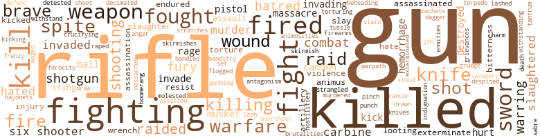

Taking Chances, by Burnham, Frederick Russel Burnham (1944)
71 music-related terms matched in this text.
Most frequent terms in this topic: line (8); music (7); lines (6); fiddle (5); dance (4)
chant.n.01
Definition: a repetitive song in which as many syllables as necessary are assigned to a single tone
| word | sentence |
|---|---|
| chant | The other members of the tribe , trembling in every limb , sat down with their heads bowed forward and intoned a kind of chant . |
dance.n.01
Definition: an artistic form of nonverbal communication
| word | sentence |
|---|---|
| dances | The youngsters then enjoyed dances , while the elders laid out plans for future campaigns against the Kafirs . |
| dance | Soon after he left , word came that a picnic and dance was to be given by the ungodly in a wood about two miles from our home . |
| dance | Some pleasant neighbors named Roddies took my mother and me in a big farm wagon to the beautiful grove and there for the first time I saw a dance . |
| dance | When the trees of the forest tower inky-black at night and the dance fires leap high ; when hundreds of glossy , sinewy naked savages bound in rhythm to the pulsating sounds pouring rapidly from a dozen great drums , an uncanny feeling steals over the white man - a feeling that the experience is not new to him . |
dance.v.03
Definition: skip, leap, or move up and down or sideways
| word | sentence |
|---|---|
| danced | He honked , spread his wings and danced , announcing to the world that he was the champion gander of all time . |
| danced | As I remember them , the crimes of the ungodly in the order of importance were - first and worst , they danced . |
| dance | Drums have given rise , through the centuries , to nearly as many unanswerable arguments as that old reliable theological question , " How many angels can dance on the point of a needle ? " |
guitar.n.01
Definition: a stringed instrument usually having six strings; played by strumming or plucking
| word | sentence |
|---|---|
| guitar | I can hear only the thrum , thrum , of a Kafir guitar and a few rich voices singing a monotonous song . |
insert.n.01
Definition: a folded section placed between the leaves of another publication
| word | sentence |
|---|---|
| insert | The black women take a long reed and insert little fibres in the reed after which they put it down into the wet sand . |
kettle.n.04
Definition: a large hemispherical brass or copper percussion instrument with a drumhead that can be tuned by adjusting the tension on it
| word | sentence |
|---|---|
| kettledrums | THOSE seem high and far-off times , those days in the Nineteen Twenties when , with no thundering salvos from the fleet and no rolling kettledrums to announce them , certain peaceful hordes invaded Africa . |
| kettles | He would join the boys and show them many old-time tricks , such as how to split a bullet on an axe blade , and to prove the shot he placed the axe in front of one of the big kettles used in making maple sugar , where a split or miss would be loudly registered by the tell-tale kettle . |
kick.v.04
Definition: kick a leg up
| word | sentence |
|---|---|
| kicking | In this instance the loose horses of the wagon train were the nearest horseflesh , and to them ran the maddened Indian ponies , kicking and biting . |
lyre.n.01
Definition: a harp used by ancient Greeks for accompaniment
| word | sentence |
|---|---|
| lyre | Those who have winged it have described it to me as being the most beautiful in the world , somewhat suggestive of the lyre bird . |
medley.n.01
Definition: a musical composition consisting of a series of songs or other musical pieces from various sources
| word | sentence |
|---|---|
| medley | The Nubians were strongly entrenched in heavy thornbush when Sir Frederick headed the first charge on their main body with his untrained medley of porters , askaries , and the like . |
music.n.01
Definition: an artistic form of auditory communication incorporating instrumental or vocal tones in a structured and continuous manner
| word | sentence |
|---|---|
| music | On the bosom of that thrilling crater we made our camp , and as we lay in our blankets on the ground that night we could hear the strange booming music of the rumbling earth which sounded to us like the beat of a stormy surf on a rocky shore . |
| music | There were phones , cables , radios , parks , music , flowers , trees , plays , and a daily paper in two languages for the pleasure and convenience of the two thousand Europeans and five thousand natives . |
| music | At the same time I felt like suggesting that in case he was interested in music , Paderewski was on his western tour so why not see him also for a couple of days and " learn all about " playing the piano ! |
| music | I was completely charmed by the music and sat spellbound on a log , just as in later years I have seen savages in Africa held motionless by the action of the throbbing drums . |
| music | I con - fused the word fiddle with griddle , so I got an Indian bow , which I knew all about , and tried patiently and confidently to make sweet music by drawing the string across my mother 's griddle . |
| music | In the end I allowed myself to share with my wife the music they poured into my ears by night and often by day . |
| music | The music of the Oof bird 's song had beguiled my ears and I became keenly interested . |
musical_instrument.n.01
Definition: any of various devices or contrivances that can be used to produce musical tones or sounds
| word | sentence |
|---|---|
| instruments | their coats and vests and hung them in the hall , then each proceeded to open the valise that contained his own personal instruments . |
| instruments | To kill the numerous June flies , the whole room was generously sprayed with a mild solution of carbolic acid , including the instruments , our hands , and our clothes . |
| instrument | He would be guarded every moment of his stay in Germany ; moreover he would have not one single engineering instrument , camera , or even a sketch-book . |
| instruments | When they came to his wooden leg one official jokingly said , " According to detective literature , we should find here a telescope , two cameras , a pistol , a dagger , invisible ink , a little poison , and a kit of nautical instruments . " |
| instruments | The young soldier in the present war is quite often familiar with electric instruments , gas engines , cameras , radios , as well as chemicals , detonators , dynamite and T.N.T. With this basic knowledge , plus a few months ' training in the various branches of the Army or Navy , the American youth can match or excel the Hun or Jap in making booby traps that will be effective in every theater of the campaign . |
piano.n.01
Definition: a keyboard instrument that is played by depressing keys that cause hammers to strike tuned strings and produce sounds
| word | sentence |
|---|---|
| piano | At the same time I felt like suggesting that in case he was interested in music , Paderewski was on his western tour so why not see him also for a couple of days and " learn all about " playing the piano ! |
rhythm.n.04
Definition: the arrangement of spoken words alternating stressed and unstressed elements
| word | sentence |
|---|---|
| rhythm | Africa is full of unanswered problems , but if some of those problems are approached through rhythm as has been suggested , it may be an easy solution . |
| rhythm | When the trees of the forest tower inky-black at night and the dance fires leap high ; when hundreds of glossy , sinewy naked savages bound in rhythm to the pulsating sounds pouring rapidly from a dozen great drums , an uncanny feeling steals over the white man - a feeling that the experience is not new to him . |
| rhythm | The whole black earth and sky seem to move in rhythm with that reverberating pulse-beat . |
section.n.01
Definition: a self-contained part of a larger composition (written or musical)
| word | sentence |
|---|---|
| section | To him I assigned one section of the East African region for exploration . |
| section | We found , on reaching the station , that the section that Howard was on had arrived ahead of schedule and that some friends of ours had already taken him to our home in Pasadena . |
| section | Churchill , knowing the Boers ' fondness for political or religious argument , got some of his fellow officers to engage the guards so heatedly that it left a section of the wire unsearched by their quick eyes . |
| section | After the uprising we decided to march into the hinterland of the Cape Coast Colony and from there move across to French Nigeria and explore a section of the country which has since become quite familiar to European soldiers . |
sing.v.02
Definition: produce tones with the voice
| word | sentence |
|---|---|
| sing | IN THE crash of warring nations and the death of millions of brave men it is difficult to sing the saga of any one hero of the past . |
| singing | I can hear only the thrum , thrum , of a Kafir guitar and a few rich voices singing a monotonous song . |
| sing | Roderick was very much touched to think that Aunt Grace would sing " Marching through Georgia " only for him . |
| sing | When the Yanks ' net was finally drawn they captured about a dozen rickety old farm wagons , a few warm coverlets , a little loose hay , several dogs that had been tied up to sing every night , numerous smoldering campfires , some tough old roosters discreetly left to crow , a few crippled horses and mules , and two men who , having filled up all too well on corn juice , had not heard the whispered orders for the little military Punch and Judy show to move camp . |
singing.n.01
Definition: the act of singing vocal music
| word | sentence |
|---|---|
| singing | Some of the blacks are still awake - I can hear them singing . |
song.n.01
Definition: a short musical composition with words
| word | sentence |
|---|---|
| song | After all these years of having my ear attuned to the song of this phenomenon of the feathered world , the only thing of which I am sure in regard to it is that it took navies , large armies , the booming of cannon , and a quantity of human blood to determine the final ownership of the original nest of the great Oof bird . |
| song | One peculiarity of the Oof is its amazing power to send its song across vast stretches of country , penetrating even closed doors and thick walls - a forerunner of the mysterious radio . |
| song | The music of the Oof bird 's song had beguiled my ears and I became keenly interested . |
| song | I can hear only the thrum , thrum , of a Kafir guitar and a few rich voices singing a monotonous song . |
tenor_drum.n.01
Definition: any of various drums with small heads
| word | sentence |
|---|---|
| tom-toms | The Ashantis and kindred tribes of Africa watch with interest the new invader - the airplane - and it is a question as to whether its drone will silence the tom-toms which for thousands of years have drowned the war cries , bugles , muskets , and cannon of all invaders . |
tone.v.01
Definition: utter monotonously and repetitively and rhythmically
| word | sentence |
|---|---|
| intoned | The other members of the tribe , trembling in every limb , sat down with their heads bowed forward and intoned a kind of chant . |
tune.n.01
Definition: a succession of notes forming a distinctive sequence
| word | sentence |
|---|---|
| lines | Forming in long lines with their spears held at a uniform angle , they traveled for hours at a jog-trot pe - culiar to the Masai , across forty miles or more of their own open rolling plateau . |
| line | I further assured him that Duquesne was raised among the Kafirs and had acquired their superlative gift of oriental story-telling , - a form of entertainment where the dividing line between fact and fiction is never confused by the native . |
| line | Every spring a line of from ten to a hundred wagons pulled out from those towns at the call of " Westward Ho ! " |
| lines | Suddenly out of their lines about a dozen Indians cantered toward the train . |
| line | This dangerous mission was kept a profound secret , but rumor later whispered that the Kaiser had a private line to the Czarina through her favorite Lady-in-Waiting , who was in the German pay , and it was she who informed the Kaiser of Kitchener 's impending visit to Russia . |
| line | Never ride slowly into camp in a straight line for if your camp is known and the enemy spies you riding directly to it he can ambush you by a sharp gallop . |
| line | What better plan could be contrived by that master of deception , Germany , than to make France believe she was to be invaded across the Swiss line , or persuade her that it was a feint , and then actually strike a lightning blow through Switzerland to her very heart ? |
| strains | He stated that he had been secretly trying to achieve this for a number of years with certain strains of chickens , but had never had the courage to even mention the experiment . |
| lines | As I write these lines a new generation has charge of our national affairs . |
| lines | AT THE time I pen these lines the world is on fire , a fire of such magnitude that no one can foresee the end . |
| lines | My alibi for mentioning him is that in the far away days of our youth we were each , under separate commands , destroying railways behind an enemy 's lines in Africa . |
| line | He built a wonderful white station with cupolas at a corner on San Pedro Street , and from there his line , which was called the Independence Line , extended to Santa Monica , where he planned to establish a new harbor . |
| line | It is a well-known fact that those of mixed blood who were ostracised by the Dutch Republic and sent out into the desert of Damaraland soon failed to perpetuate their line and died out if left to their own devices . |
| lines | Careful observation of the trails approaching Murray 's lines showed where he could best suspend containers of acid so that as a soft protruding branch was pushed aside the container was tipped and a small portion of the acid spilled on the enemy ; then the branch flew back for the benefit of the next passerby . |
| line | A scout moving with utmost silence and caution , seeing a ray of light flash and disappear in the foliage high above his head will freeze in his tracks and listen for some time before moving back for aid or changing his line of advance . |
violin.n.01
Definition: bowed stringed instrument that is the highest member of the violin family; this instrument has four strings and a hollow body and an unfretted fingerboard and is played with a bow
| word | sentence |
|---|---|
| fiddle | Experts and engineers retained on a contingent basis composed the following professions - forestry , florists , interior decorators , voice culturists , musicians ( except those necessary artists who could play the bull fiddle and/or drums ) . |
| fiddle | It was the first time I had ever heard a fiddle . |
| fiddle | The next day I repeatedly questioned mother about the fiddle . |
| fiddle | I con - fused the word fiddle with griddle , so I got an Indian bow , which I knew all about , and tried patiently and confidently to make sweet music by drawing the string across my mother 's griddle . |
| fiddle | Soon afterward a playmate showed me how to make a cornstalk fiddle and then I was triumphant . |
warble.v.01
Definition: sing or play with trills, alternating with the half note above or below
| word | sentence |
|---|---|
| quavering | Every bell-cow was headed out and the long quavering cooee of the cowboys echoed from crag to crag . |
whistle.v.01
Definition: make whistling sounds
| word | sentence |
|---|---|
| whistling | The Masai , who were expert cattle drivers , then tore open the cattle kraals , formed lines around the cattle , and by a strange whistling call , moved them with incredible speed along the trails , across hills , and out into the open plains . |
| whistle | We advanced stealthily for some time , listening for the whistle of the first native who should locate the elephant . |
| whistle | At last a quitter blew a police whistle and Manuel Carillo , the town marshall , a powerful man of Spanish descent , appeared . |
whistle.v.05
Definition: make a whining, ringing, or whistling sound
| word | sentence |
|---|---|
| sung | It was not long ago that I heard the echo of the siren song sung into the ear of one Cullanan who , while walking through a mine drift not far from Pretoria , plucked from the clay wall of the tunnel the largest diamond ever known to the world and valued at over half a million pounds sterling - two and one half million dollars . |
634 violence-related terms matched in this text.
Most frequent terms in this topic: gun (64); killed (46); fighting (45); rifle (42); kill (29)
abrasion.n.01
Definition: an abraded area where the skin is torn or worn off
| word | sentence |
|---|---|
| scratches | On closer examination he found pebbles showing slight scratches which might have been caused by wheels passing over them . |
anger.n.01
Definition: a strong emotion; a feeling that is oriented toward some real or supposed grievance
| word | sentence |
|---|---|
| anger | This brought him the anger of Kitchener which , long years afterwards when both these great men held the destiny of the first World War in their hands , marred the unity of action that would doubtless have captured Constantinople , brought the war to an early close , and saved millions of lives . |
animosity.n.01
Definition: a feeling of ill will arousing active hostility
| word | sentence |
|---|---|
| animus | He believed the Indian animus towards the whites was based on a tricky cowardice that could be readily overcome if treated by direct action . |
| animus | None of the following episodes can be found in a child 's history of Mexico nor in any of the newspapers of that time , and to make them understandable it is well to review the real animus of those long civil wars . |
| animosities | Kitchener , the magnificent iron soldier who conquered the followers of the Madi in far-away Khartoum - saga of glory enough for one soldier ; Kitchener who finally commanded one of the greatest armies of the world , was susceptible to small animosities and other tiny vices which , in some ways , endeared him to all who knew him . |
assassinate.v.01
Definition: murder; especially of socially prominent persons
| word | sentence |
|---|---|
| assassinated | With the hand-picked group of twenty in a concentrated area like Capetown he could have destroyed in a few hours the great naval base of South Africa , blocked the railway passes along Hex River , assassinated the great Kitchener and several high local officials and thus have prolonged the Boer War indefinitely . |
| assassinated | Newspapers headlined " Another Mexican President assassinated . |
attack.v.01
Definition: launch an attack or assault on; begin hostilities or start warfare with
| word | sentence |
|---|---|
| assailed | The little settlement of McMillan had been assailed and as an attack on Globe was expected hourly , Captain Burbridge was put in command of its defense . |
banditry.n.01
Definition: the practice of plundering in gangs
| word | sentence |
|---|---|
| banditry | In Mexico there were a large number of Chinese which the prevalent banditry regularly robbed and murdered . |
bandy.v.02
Definition: exchange blows
| word | sentence |
|---|---|
| bandied | All of them resented the meeting and such words as " Bounder , " " Insufferable Ass , " " Blighter , " and others even stronger were bandied all over the ship . |
battle.v.01
Definition: battle or contend against in or as if in a battle
| word | sentence |
|---|---|
| combat | At that time no cure had been found for that dread disease although the medical experts of the world , Dr. Koch and others , were trying every expedient to combat it . |
bayonet.n.01
Definition: a knife that can be fixed to the end of a rifle and used as a weapon
| word | sentence |
|---|---|
| bayonets | Missionaries , with their stories of the Bible had been tried , as well as soldiers with their bayonets , gunpowder , and gin . |
bleeding.n.01
Definition: the flow of blood from a ruptured blood vessel
| word | sentence |
|---|---|
| hemorrhage | But when Howard , for secret reasons wished to go to Bad Nauheim , strange to say at first the Countess could not get permission to go , yet a week later when he was recovering from a hemorrhage , the Countess had somehow wangled a permit for him to make the move . |
| hemorrhage | He went immediately to a restaurant for luncheon and had just seated himself at a small table when a sudden and devastating hemorrhage occurred , covering the white tablecloth with blood . |
| hemorrhage | On the third day the nurse told him that an American doctor who had just arrived in Switzerland from Chicago happened to be in the restaurant at the time of Howard 's hemorrhage and had with him some of the first adrenalin used in the medical profession for the quick coagulation of blood , and that his administration of it to Howard had prevented his instant passing . |
boomerang.n.01
Definition: a curved piece of wood; when properly thrown will return to thrower
| word | sentence |
|---|---|
| boomerang | It was a very grave question whether the rebellion among the armed troops brought in by the Government might not prove a terrible boomerang and more disastrous than the war with the savage Ashantis . |
brush.n.06
Definition: a minor short-term fight
| word | sentence |
|---|---|
| skirmishes | He then moved on to Tennessee and Kentucky to aid some of his old friends , and in one of the skirmishes he was killed . |
| skirmish | The " broncos " did not skirmish about as formerly - in fact they subsided . |
butcher.v.01
Definition: kill (animals) usually for food consumption
| word | sentence |
|---|---|
| slaughtered | Sometimes several thousand animals were slaughtered in a single drive , but the British Government now prohibits such reckless destruction . |
| slaughtered | This nourishment , with the flesh of an occasional animal slaughtered from their herds , formed their principal food . |
| slaughtered | Doubtless the fierce Vikings raided and carried off the gold of slaughtered chiefs , and left in the jungles a goodly payment of their own bones , then turned their prows north and were seen no more . |
| slaughtered | If to this is added some of the savages ' intimate knowledge of nature there should be developed in our armed forces the power to do much with little to prevent our men from being tricked and slaughtered like sheep . |
cannon.n.04
Definition: heavy automatic gun fired from an airplane
| word | sentence |
|---|---|
| cannon | After all these years of having my ear attuned to the song of this phenomenon of the feathered world , the only thing of which I am sure in regard to it is that it took navies , large armies , the booming of cannon , and a quantity of human blood to determine the final ownership of the original nest of the great Oof bird . |
| cannons | And I believe we did manage to get two big cannons placed on Point Fermin , both of which could have been captured any stormy night by a sheriff 's posse . |
| cannon | The Ashantis and kindred tribes of Africa watch with interest the new invader - the airplane - and it is a question as to whether its drone will silence the tom-toms which for thousands of years have drowned the war cries , bugles , muskets , and cannon of all invaders . |
carbine.n.01
Definition: light automatic rifle
| word | sentence |
|---|---|
| carbine | No sword , carbine , or other weapon was used . |
| carbine | Those ranges seem ridiculous in modern warfare , but we must remember that Quantrell 's most dangerous enemies were the U. S. Cavalry and the Missouri State Militia , who depended on the sword and seldom used the carbine except for dismounted work . |
| carbine | The cavalryman 's sword - even his carbine - was about as potent as our modern soldier 's machine gun trying to stop Hitler 's big tanks at Dunkirk . |
| carbine | For arms I took fifty rounds of shells and a Winchester carbine model of 1873 , a light handy repeater which used a .44 cartridge and black powder . |
character_assassination.n.01
Definition: an attack intended to ruin someone's reputation
| word | sentence |
|---|---|
| assassination | Fame , glory , and assassination awaited Obregon just as it has so many others who have ruled the wonderful land of Mexico . |
| assassination | The golden train from Mexico , the marches , speeches , flag-waving , vivas , and hurrahs - even the excitement of the attempted assassination , but today the ethical and political seeds sown by those men of vision are bearing fruit or grown into giant trees to shelter our future . |
contemn.v.01
Definition: look down on with disdain
| word | sentence |
|---|---|
| despised | Fortunately Murray 's native defenders were Houssas , a strong Mohammedan tribe who despised the pagan Ashantis and among them were also a number of coast natives , who were equally anti-Ashanti . |
craze.n.02
Definition: state of violent mental agitation
| word | sentence |
|---|---|
| frenzy | But of course , such a peaceful state would be enough to rouse any reformer to highest frenzy . |
crucify.v.01
Definition: kill by nailing onto a cross
| word | sentence |
|---|---|
| crucifying | The onrushing elephant will scrupulously avoid it , although the tough-skinned giraffe sometimes manages to cross a small patch if the crucifying thorns are not above his knees . |
dagger.n.01
Definition: a short knife with a pointed blade used for piercing or stabbing
| word | sentence |
|---|---|
| dagger | When they came to his wooden leg one official jokingly said , " According to detective literature , we should find here a telescope , two cameras , a pistol , a dagger , invisible ink , a little poison , and a kit of nautical instruments . " |
death.n.08
Definition: the act of killing
| word | sentence |
|---|---|
| death | So the twenty co-con - spirators met death by a British firing squad , but Du-quesne , at the price of revealing certain other secrets , escaped the death penalty and was sentenced for life . |
decapitation.n.02
Definition: killing by cutting off the head
| word | sentence |
|---|---|
| beheading | As a youth I thought the Chinese were cowardly because they ran from gunfire , but when in China not so long ago , I watched a squad of Chinese walk forth calmly to meet death by beheading , I changed my mind . |
defy.v.01
Definition: resist or confront with resistance
| word | sentence |
|---|---|
| withstanding | I have always felt that our rubber navy justified itself by withstanding the assault of the bull hippo and the breaking of the ferry monopoly , but most important of all , the hastening of our crossing over the Zambezi . |
| withstand | Nearly all the townspeople had large yards and in the spring our friends in town were given new varieties of strawberry and rhubarb plants which would withstand the rigorous climate of Minnesota . |
destroy.v.04
Definition: put (an animal) to death
| word | sentence |
|---|---|
| destroyed | He told us that constantly depending on a six-shooter destroyed the real courage of a man and made him worthless in a hand-to-hand fight . |
| destroyed | Except for this man , London , unconquered for nearly a thousand years , would have been destroyed as completely as Carthage ; and the British Empire would have been only an historical memory . |
| destroyed | Sun , sand , winds , and rainfalls of twenty years had not altogether destroyed the peculiar line marks that the wagon wheels had made . |
draw.v.23
Definition: pull (a person) apart with four horses tied to his extremities, so as to execute him
| word | sentence |
|---|---|
| drawn | The wagons had been drawn up in a great circle . |
| draw | Evidently the Indian was trying to draw my brother 's fire and finish him before he could shoot again . |
eliminate.v.03
Definition: kill in large numbers
| word | sentence |
|---|---|
| decimated | Moreover , his herds , at one time numbering thousands , have been frightfully decimated by the rinderpest brought in by the Italians during their war with King Menelik . |
engage.v.07
Definition: carry on (wars, battles, or campaigns)
| word | sentence |
|---|---|
| waged | I still marvel at their patience as I poured out the talc of the struggle for the Citadel of Quebec in 1759 which was waged from dawn until after dark between those great soldiers , Wolfe and Montcalm , during which both lost their lives . |
exterminate.v.01
Definition: kill en masse; kill on a large scale; kill many
| word | sentence |
|---|---|
| exterminate | Millions of natives with pit , spear , and poisoned arrow could not exterminate it entirely . |
| exterminate | While the temper of the Mexicans has been at white heat I have heard them make preposterous threats , but never have I heard any coldblooded appeal to exterminate all their enemies , even the well-hated gringos . |
| exterminated | No native tribe has been exterminated ; famines have been prevented ; and their garrisons have grown smaller every year . |
ferociousness.n.01
Definition: the trait of extreme cruelty
| word | sentence |
|---|---|
| brutalities | Their blood-curdling brutalities have dried up our sympathy or pity . |
ferocity.n.01
Definition: the property of being wild or turbulent
| word | sentence |
|---|---|
| ferocity | The lion exhibited the same affection towards his old master that a dog would show , and it seemed a pity that he could not be trusted to control the latent ferocity and enormous power that lay within him . |
fight.n.02
Definition: the act of fighting; any contest or struggle
| word | sentence |
|---|---|
| combat | Brooke defeated their champion after an exciting combat . |
| combat | My second barrel placed a bullet accurately in his heart , ending the combat without the loss of a single Kikuyu . |
| combat | I was loath to refuse the alluring adventure , but my nautical education had been sadly neglected and I knew that a combat between a buccaneer and a scout would be like a contest between a whale and a bear . |
| fighting | Pawnee Bill 's people came from the Tennessee mountains and his father had passed on to him the lore handed down from Revolutionary and Indian fighting days . |
| fighting | The great pirate , Morgan , was not only a shrewd navigator , but he was also a master of jungle fighting . |
| combat | The latest word which I have from relatives and friends at the fighting front is that they are learning a hundred long-forgotten combat skills . |
| fighting | The most favorable condition for guerrilla fighting requires the friendship of a goodly part of the people of the country . |
| fighting | Each one , like the hornet , dies fighting , but prefers to kill his enemy , or at least drive him away by his terrible sting , for the code of all guerrillas is " attack , attack . " |
| fighting | Many of the astonishing results of Quantrell 's fighting was his quickness to use the material at hand to meet an emergency . |
| fighting | TODAY guerrilla fighting , like Indian fighting , seems to be coming into its own . |
| fighting | TODAY guerrilla fighting , like Indian fighting , seems to be coming into its own . |
| fighting | A young officer who took part in some of the severe fighting in the jungles of the South Pacific during the early part of War II gave me some accurate details of the terrible lessons taught us by the Japanese . |
| fighting | Mexico is a pastmaster of the military art of guerrilla fighting . |
| fighting | El Toro kept his word and none of the later fighting that was thrust upon us can be attributed to him or Obregon . |
| fighting | This method is useless in close range quick-draw fighting , but often wins against a rifle if the enemy happens to miss his first shot or takes too long a time to draw his first bead . |
| fighting | The enemy had made it almost impossible to get in touch with certain Senoussi and other important chiefs and there seemed to be but two methods of procedure open , one of which was to take a strong force of veteran desert troops , many extra camels , machine guns , and supplies and by a long fast drive cut through the various hostile desert bands to a certain important oasis , which , if swiftly surprised , could be taken with little or no fighting . |
| fighting | It was to be a scientific triumph of the union of prize fighting and pig culture . |
| fighting | Everything went well until they neared the spot where the fighting had started . |
| fighting | When I was in the Philippines some years ago I became deeply interested in discussing with one of the officers who had served under the late General Funston , the details of jungle fighting by the Filipinos against the Spaniards and later against the United States . |
| fighting | One of the hardest traps to escape in jungle fighting is along a narrow trail where the pressure of the hand or body against masses of innocent looking overhanging vines and tendrils - all too soft and yielding to warrant a swing of the bush knife - results in the loosening of the slipknot of a string that in turn releases a stick about a yard long . |
| fighting | This use of cloth with accommodation of color to that of sand , scrub , grass , or even bare rocks is a common aid to desert fighting . |
fight.n.05
Definition: a boxing or wrestling match
| word | sentence |
|---|---|
| fight | Then there was my own gritty brother-in-law , John Blick , who had wandered over half the globe as a hunter and scout , and who served under Cecil Rhodes in the Matabele War and with Colonel Gifford in the big fight on the Insesi River . |
| fight | While we waited for the little cargo boat which would take us to a terrain far more difficult than that which we had just struggled through , our only amusement was a daily walk along the shore where , at low tide we found innumerable crabs always looking for a fight . |
| fight | The carcass seemed to be in good condition , the teeth were strong and there were no wounds visible which would evidence a fight with his own kind . |
| fight | Condensed they sum up about as follows : After Duquesne got well under way , a disagreement occurred which was followed by a desperate fight over the convoy . |
| fight | The natives of that region were very hostile to the high veldt Kafirs and an awful fight took place between them over the native women . |
| fight | My brother Howard , in spite of a long-drawn fight against tuberculosis , the loss of one leg in early youth , and a gunshot wound by an Indian , was , like Lafayette , a romantic from earlier incarnation and should have been a Knight in Sir Arthur 's Court . |
| fight | Then came a long convalescence and the fight against tuberculosis . |
| fight | I had taught him that if he were ever in a fight with an attacker who had a rifle , his best chance was to lie flat , use both hands to hold his gun firmly , and shoot by aiming slowly , because a rifleman was very likely to overshoot . |
| fights | In one of our fights in Mexico an Indian had been killed by a shot through the forehead and the skull and cross-bones were saved as mementos . |
| fight | This military colony put up a strong fight and was not defeated until Jan Smuts , one of the outstanding military men of all time , came up against them from South Africa with fifty thousand Boers who had thrown in their lot with England and the Allies . |
| fight | A little later her youngest brother came to visit us , and as I was able to give him some assistance during a fight with some other boys , he and I became devoted pals , especially as we later got licked together several times , a tie that truly binds . |
| fight | He did n't want to murder anybody , but he would like to have a good fight . |
| fights | In one of the fights a sortie was made by about a hundred of us against a regiment of Matabele . |
| Fight | EVERYBODY who writes about Spain tells about the Bull Fight . |
| fights | The taking over of East Africa entailed upon the white man years of war and famine ; desperate fights against fearful odds ; long caravan marches through hundreds of miles of perilous wilderness , and the occasional mutiny of their own black troops . |
fight.v.02
Definition: fight against or resist strongly
| word | sentence |
|---|---|
| fought | I must not fail to mention C. E. Howitt , an Englishman of hardy stock , a good miner and prospector who had ranged over Africa and fought with distinction in the conquest of Rhodesia . |
| fighting | More tales came to my ears that far up in the German East Africa country was a strange white lake , but the Masai were fighting the Germans at that time and no one could get into the country . |
| fighting | Sometime between two and four o'clock in the morning I heard frightful yelling and as I jumped from my tent , gun in hand , I surmised that we were being raided by the hostile Masai , who were then fighting the Germans in East Africa . |
| fighting | As the files of driven cattle appeared in the open country , Masai scouts took the word to their villages and the fighting men then turned out in full force , took charge of the herd on the veldt and relieved the war-worn El Manua so they could walk home at their ease . |
| fought | Enmities last from season to season and natives have informed me that certain bull elephants have fought each other at times for years , although friendly with all other members of the herd . |
| fighting | Because such men live and work no one nowadays need match fighting crabs for amusement on the lonely sands of Beira . |
| fighting | Wherever there is guerrilla fighting all domestic animals are useful , as they have a homing instinct which can be utilized . |
| fighting | The latest word which I have from relatives and friends at the fighting front is that they are learning a hundred long-forgotten combat skills . |
| fought | It was practised by every tribe of Indians with which we fought , and its value was quickly recognized and used by our own ablest scouts . |
| fighting | In this war , we are fighting enemies who refuse to follow the code of King Arthur . |
| fought | Good examples of such leaders in recent years are Lawrence with his Arabs , and Mihailovitch , that intrepid leader of the Serbian Independent Army who has fought so valiantly against the Nazis in this present war . |
| fighting | Ossawattomie Brown , a Jay leader , had just been hung for starting a rebellion against the United States to free the slaves at Harper 's Ferry and it brought into being a great cause , an emotional hurricane of dis - sent for Quantrell that made guerrilla fighting possible . |
| fighting | His men supposed he would fire the bridge after fighting a stiff rear-guard action to let part of his men and horses escape . |
| fight | Some in our train have suspected that those Indians were spies and that we have been under constant observation day and night ; that the war party trails are increasing ; that our herd of exceptionally fine horses - the most alluring prize in an Indian 's eyes - would induce war parties that usually fight each other over the hunting rights of the vast prairies , to join together and attack us in strength - then share the loot . |
| fighting | Everybody was hoping that fighting would not break out . |
| fighting | The Winchester did not have as long range as a Government Springfield , but that was of little consequence for in Indian fighting it was seldom that we had to shoot farther than two hundred yards , and often only a few feet . |
| fighting | We insisted that we were rated as good fighting men by Captain Burbridge who had already tried us out against the Apaches and therefore we were certainly good enough to play nursemaids to a few timid Cornishmen . |
| fighting | I egged them on to tell me of their fighting experiences , in all of which they had proved terrible antagonists . |
| fight | When well inside the mine the foreman became quite heroic and swore that if any blankety-blank Indians wanted to fight they would have to come up to the mine to do it ; that he was not hired to defend any mess house against Indians . |
| defend | When well inside the mine the foreman became quite heroic and swore that if any blankety-blank Indians wanted to fight they would have to come up to the mine to do it ; that he was not hired to defend any mess house against Indians . |
| fight | Instead he said that he would fight a duel to the death if the foreman would fight in Finnish style . |
| fight | Instead he said that he would fight a duel to the death if the foreman would fight in Finnish style . |
| fight | The contestants were to strip naked and the seconds were to place each man in opposite corners , shut the door and then let them fight it out in the dark . |
| fighting | This officer was very keen on our immediately adopting all of the Jap 's methods of fighting and putting them in our regulations . |
| fighting | But to put into our regulations methods of fighting without taking into consideration the terrain , climate , oceans , and peoples , would be to repeat some of the mistakes made during the Spanish War . |
| fight | One day El Toro said , " I pray for the time when we will ride again and fight nearly every day . |
| fought | Several old Yaquis who , in their youth , had fought the Mexican Government just as their fathers had fought the Spanish Crown from the days of Cortez , joined up with Sacatone and gleefully took on the job of teaching his young men how to keep El Toro awake and also how to make his cup of coffee very bitter . |
| fought | Several old Yaquis who , in their youth , had fought the Mexican Government just as their fathers had fought the Spanish Crown from the days of Cortez , joined up with Sacatone and gleefully took on the job of teaching his young men how to keep El Toro awake and also how to make his cup of coffee very bitter . |
| fight | Everybody under him liked him and would fight for him , but they had no particular ties to each other . |
| fight | So a hush-hush plan was quickly evolved and only one permanent scar resulted from those exciting " Valor of Ignorance " days - the scar left when the president of a great university rose to political power and chose to " sound off " ideas smacking of Mahatma Ghandi 's " too proud to fight " and " peace at any price . " |
| fought | I had killed bears and fought Indians , and I allowed him to use my very own revolver I For many years I was put on a pinnacle that often was as difficult to mount as an unblinded bronco . |
| fight | After an all night fight the remnant of Howard 's force was reduced to eight men , ammunition exhausted , and dying of thirst . |
| fought | Three years passed and still the powers fought on and on until a point was reached where just one straw of advantage to either side might break the camel 's back of the struggle . |
| fighting | Howard Burnham could qualify , but how could an American engineer , an alien enemy , get in and out of Germany , that most difficult of all the fighting nations to penetrate , for they had the finest secret service known . |
| fighting | Harris dashed to the east coast to help his fighting Irish manager and his riotous assortment of patriots , while I was dispatched to that cauldron of unrest - the land of the Yaqui . |
| fought | In Africa the white men fought at great odds , the natives often outnumbering them hundreds to one . |
| fighting | His expert knowledge consisted of having owned , in boyhood , one celebrated fighting cock and of having acquired , during a six months ' stay in the Philippines , quite a " stable " of feathered and spurred fighters . |
| fighting | Constantly fighting , they trekked night and day and at last , just in time to save the exhausted men , they were met by reinforcements under the famous leader , General Petrus Joubert . |
| fight | All the able-bodied men were keen to go and fight . |
| fighting | We marked off a tribal boundary under the big tamaracks for Bent 's tribe , " The Piutes , " and to keep the rival tribes from fighting we elected two overlords , or chieftains , " Sitting Bull " and " Almighty Voice , " and grownups as well as children enjoyed the play . |
| fought | He fought for it valiantly and at long last won his heart 's desire , " Death in action . " |
| fought | We passed through the battle-ground of the Shan-gani and Fred showed us just where he was camped outside the laager that eventful night , the position he fought from and the country he scouted over the next day . |
| fighting | He had had forty-one years of service in India , mostly on the frontiers , fighting the tribesmen in the mountain countries . |
| fighting | After his years in India he had retired with honors , but when his son was killed fighting the Boers , Lord Roberts , in spite of his years , was again called by his country to go to South Africa and serve against the Boers as Commander-in-Chief . |
| fought | It was only a little more than forty years ago that a handful of men fought against a subtle enemy and kept their flag flying in as tough jungles as any in the world , and perhaps a short account of that battle at Kumasi , the capital of the Gold Coast , will be of interest as we think of the boys of this generation who have kept their flags flying from Attu to the ends of the earth . |
| fighting | Ashanti was well named the " white man 's grave , " for in those days there was no known way of successfully fighting fevers or making camps sanitary , and a brief description of the country may give the reader an idea of the sharp impact made by the white man in this sector of the alluring but deadly tropics . |
| fought | We rose , we ate , we marched , we danced , we slept , we fought , and we died to its interminable tomtom . |
| fighting | Then came the Portuguese , the Spanish , and the Dutch , fighting first with steel and mail . |
| fought | Later they landed big ships on the harborless shores , fought with guns , and built great walls and forts which stand to this day . |
| fighting | The endeavor by a group of white officers stationed at Kumasi to gain possession of the stool and so confirm the establishment of British prestige , led to the last uprising which came at a time when most of the white troops were occupied in fighting farther south in Rhodesia . |
| fight | It was agreed that of their number , one hundred men , the smallest detail that could possibly defend Kumasi , should remain in the fort and keep the flag flying as long as possible , and to them should be given all the remaining food while the main body of the troops , some six hundred blacks led by eight white officers , should make a dash from the fort , fight their way over barricades and entrenchments against the countless Ashantis , and endeavor to pierce the almost impenetrable jungle for a distance of one hundred and forty miles to the coast to fetch assistance . |
| fight | It is astounding that any survived to tell the tale , yet a number did fight through and finally reached a point where our reinforcements coming from the coast under General Wilcox met and saved them . |
| fighting | The fighting strength of their Aryan ancestors seems to have acquired fresh vigor and developed a new type of man equal to the best of the white race in any part of the world . |
| fighting | He told me that instead of retreating to the coast when trouble loomed , he made up his mind to stick it out until help could reach him from Kumasi , little knowing that Kumasi was then fighting for its very life . |
| fighting | The three of us rode hard all night and finally joined a small Somali tribe which was still fighting the British . |
firearm.n.01
Definition: a portable gun
| word | sentence |
|---|---|
| firearms | The entire camp was one intense crackle of firearms and I believe that after a while if the firing had ceased when we were asleep we would have been wakened by the silence . |
fit.n.01
Definition: a display of bad temper
| word | sentence |
|---|---|
| tantrum | At this Anna had a tantrum of indignation , until the officer shut everybody out and undertook an interrogation of his own . |
flog.v.01
Definition: beat severely with a whip or rod
| word | sentence |
|---|---|
| flogged | Johann said , " Yes , but he had one of your men flogged . |
fury.n.01
Definition: a feeling of intense anger
| word | sentence |
|---|---|
| rage | Suddenly he caught my scent and in alarm and rage he wheeled directly in front of me . |
| fury | Those who doubt the memory of animals may prefer to think that the elephant stopped in that clump of bamboo by chance and had no intention of waiting for anyone , but that when the natives passed by his fury was aroused and he attacked them with his last strength . |
| fury | Then came an occasion when the fast-moving shutters of Duquesne 's brain opened up for the fraction of a second and revealed to me a scorching flame of bitterness and fury that sprang straight from his heart 's core . |
| rage | I was startled , but even then dared hope that his rage might be cooled by time and reason . |
| rage | Rufus in a rage shouted , " Then stay , you coward ! " |
| fury | It was bad enough to be aware of alien enemies that were not too far away , but to have the constant threat of a close and silent enemy was worse than the fury of battle . |
| fury | He kicks the torment up into the air and it sails like a kite as he races away , but it drops ever again on his heels with terrifying fury . |
| fury | Its low booming was as persistent as the beat of a man 's heart , and its crashing roar of war made the native hearers foam at the mouth and their eyes turn red with fury . |
grudge.n.01
Definition: a resentment strong enough to justify retaliation
| word | sentence |
|---|---|
| grudge | I did not know that the fellow held a grudge - neither did he know that I could draw with my left - a trick I learned in Texas . |
| grievances | There were no bitter arguments about grievances . |
gun.n.01
Definition: a weapon that discharges a missile at high velocity (especially from a metal tube or barrel)
| word | sentence |
|---|---|
| gun | They loaded each native with a calabash of water and forced them , at the muzzle of a gun , to make the return march . |
| gun | Sometime between two and four o'clock in the morning I heard frightful yelling and as I jumped from my tent , gun in hand , I surmised that we were being raided by the hostile Masai , who were then fighting the Germans in East Africa . |
| gun | It is difficult to track a dry trail and be ready instantly with eye and gun , but I finally found where the lion had entered a dense clump of mimosa trees that surrounded a clearing of thick grass some five or six feet high . |
| gun | I waited for the lion to spring , but the as-kari could control himself no longer and fired his gun into the air . |
| guns | Soon more came and traded guns for hides , feathers , and ivory . |
| gun | Give me a gun also and I will give you a kaross made entirely'of the tails of leopards . |
| gun | As I raised my gun I found that the sights had become entirely covered with a mass of peculiar golden cobweb that is common in that part of Africa . |
| gun | At the same moment the elephant turned his immense head and spied me , but I was obliged to take precious time to clear the cobwebs from the front sight of the gun before I dared risk a shot , for unless the bullet pierced the elephant 's heart it would have no more effect in stopping a rush than a shot from a .22 rifle would have on a charging bull . |
| gun | To my surprise the enormous beast continued to rush without stopping - and I faced him with an empty gun . |
| guns | Dunn and I reloaded our guns and with the native who had had the courage to stay with us we took up the elephant 's trail . |
| guns | Our guns rang out almost in unison , but thanks to the power of my cordite the shock was so great that it spun him around and he veered off into the forest . |
| guns | Reloading our guns we took up the trail again , although , it must be confessed , with a weakened faith in our marksmanship and weapons . |
| gun | I fired both barrels of my gun and Dunn joined with his rifle , then we leaped into the forks of the fallen tree just as the great brute thundered by . |
| gun | I reloaded my gun and managed to send a bullet into the base of his brain , bringing death at last . |
| guns | Our guns were , of course , much less powerful than those in use today , but either of the shots from the gun I carried would have brought instant death to any other animal . |
| gun | Our guns were , of course , much less powerful than those in use today , but either of the shots from the gun I carried would have brought instant death to any other animal . |
| gun | Taking with me only one gun-bearer with some extra cartridges , - and carrying my own gun , - I slipped through the jungle attempting to reach a spot where I could see clearly enough to tell the tuskers from the cows and young bulls . |
| gun | However , to retreat was about as dangerous as to attack , therefore I drew the gun to my shoulder and waited patiently for the animal to move so as to get a temple shot . |
| gun | He charged with astounding agility , but evidently did not see me ; he simply lunged furiously in the direction from which my scent and the roar of the gun had reached him . |
| gun | Knowing both the uncertainty of the white man 's gun and the enormous vitality and destructive power of the wounded elephant , it was a most courageous undertaking for those natives to go into that jungle as beaters , and it gave me a respect for their tribe that I had never had before . |
| gun | In the darkness of the jungle I had not seen the outline of the slate-colored body and I was just able to throw my gun to my shoulder as the elephant crashed toward me . |
| guns | After learning how to take apart , oil , and reload the guns , I was taught the first movements and began practicing with each hand at all kinds of targets , both moving and still , by day , night , and moonlight . |
| gun | The cavalryman 's sword - even his carbine - was about as potent as our modern soldier 's machine gun trying to stop Hitler 's big tanks at Dunkirk . |
| gun | However , our gun power and our fast galloping horses make us invulnerable to the half-armed nomads who roam these plains . |
| gun | Jones ' shot failed because he had used a gun he had never fired before and the bullet passed through his victim 's coat just under the arm and not through the heart . |
| gun | The Indian theory was about to win , because the torn coat showed that a very large bullet had been fired and it was known that Jones had no gun of that caliber . |
| gun | Then a twelve-year-old girl who was with a Tennessee outfit piped up that she saw Jones sneaking the large-bore gun from her father 's wagon where it was carried as a spare . |
| gun | I will not let you have a gun , for you are more expert with the bow and arrow . |
| gun | A hole was bored in the butt of the gun in which to carry the jointed cleaning rod . |
| gun | By enlarging the hole and discarding the rod I had space to carry a good string pull-through , a surgeon 's needle and some silk thread with which to sew a wound , a small file and screw driver for repairing the gun . |
| gun | I carefully stretched the green hide of the front leg of a deer over the barrel of the gun so as to conceal it , leaving only a small slit for the sights to project through . |
| gun | If a gun is covered with deer hide one may walk within a few feet of his enemy or prey and never be noticed . |
| gun | To make my retreat more secure I took the linen thread and stretched it from bush to rock and rock to bush around me in such a way that any pressure on the string would send a pile of stones clattering down , giving me ample time to jump between the rocks , gun in hand , to receive callers . |
| gun | They moved on , then all was silence but in my mind every bush held an Indian with his finger on the trigger of his gun and I was rather pleased with myself that I had not rashly shot at the first one when he rode in view . |
| gun | In a few minutes I heard him call and saw him raise his gun at arm 's length and turn it round and back , the signal for an enemy sign . |
| gun | I could have killed a deer , but firing a gun was dangerous while scouting . |
| gun | Do n't fire a gun . |
| gun | Pick up your gun which is lying on the bunk and get out of here at once . " |
| guns | I turned to find that its only opening , the door , was blocked by three Apaches with guns pointed toward me . |
| gun | And there was my own gun lying on the bunk just out of reach ! |
| gun | At that it looked as if blood might be shed , but as we were armed the miners dared not attack us , and since they were unarmed we were honor-bound not to make a gun play of any kind , although we were itching to do so . |
| gun | I then ran down the trail and began popping with my gun at the mess house . |
| gun | Among them was their foreman , a thickset powerful man who had several notches on his gun , but unlike most gun-men he was a terrific rough-and-tumble fighter . |
| gun | Give a Mexican a horse , a gun , and a handful of corn and you have a dangerous enemy or a very good friend . |
| guns | El Toro countered with reports that a sub-chief of Obregon was going to advance from Navojoa on the Mayo River with machine guns and three hundred men to wipe out Sacatone 's entire band . |
| gun | But good fortune finally came El Toro 's way ; in spite of the very close blockade on every harbor and railroad he got a machine gun and sand-bagged and mounted it on top of the highest building in town . |
| gun | And the news of the machine gun 's arrival brought him some new recruits . |
| gun | Every day he took the revolver apart , oiled , and put it together again and soon he begged me to teach him how to use the precious gun . |
| gun | Just as he spied the muzzle of the gun , a second shot spat out and he felt a sting in his side just above the hip . |
| gun | I had taught him that if he were ever in a fight with an attacker who had a rifle , his best chance was to lie flat , use both hands to hold his gun firmly , and shoot by aiming slowly , because a rifleman was very likely to overshoot . |
| gun | He threw himself flat , drawing as he went down and holding the gun as he had a thousand times on the barranca in Pasadena . |
| guns | The enemy had made it almost impossible to get in touch with certain Senoussi and other important chiefs and there seemed to be but two methods of procedure open , one of which was to take a strong force of veteran desert troops , many extra camels , machine guns , and supplies and by a long fast drive cut through the various hostile desert bands to a certain important oasis , which , if swiftly surprised , could be taken with little or no fighting . |
| guns | During the night I heard the big guns roar several times , but in the morning we were still shy of hippo meat . |
| guns | Therefore such a move meant the conditioning of all highways , culverts , bridges , curves and grades over which the great guns must pass . |
| gun | About that time Colt brought out a fine new machine gun . |
| gun | Such a gun would be useful to our settlers in repelling the giant jack rabbits that came raging down on them from the Mexican mountains . |
| gun | I remember one quiet Sunday morning just before we were to move portions of our arsenal of " Freedom and Democracy " a step nearer the border we decided to give the machine gun one more tryout . |
| gun | We did not notice , however , that the braces of the gun had settled after the first belt was fired . |
| gun | You just give him the gun and see what happens . |
| gun | Within a few feet of one of the Presidents one of the suspects was stopped with a loaded gun in his hand . |
| gun | The barrel of the gun was sawed off very short , and the stock was sawed in such a way that it just allowed the mainspring to drive the hammer . |
| gun | By putting a lead pencil in the short barrel and protruding the pencil between his trigger and middle fingers the suspect was ostensibly writing on a note pad which was held in his left hand , the gun being completely covered from sight by his right hand . |
| gun | The most important thing about that reaper , to my young mind , was a certain detachable blue stick or brace that slightly resembled a gun . |
| gun | The gun which my uncle used in the Civil War was polished and hung over the mantelpiece in his front room . |
| gun | We placed the gun across a small tree and waited for a muskrat to show himself in the stream . |
| gun | In a short time one appeared and my cousin fired the gun . |
| gun | It was then my turn to shoot , but my ardent desire to fire a gun was ' considerably cooled by that event . |
| gun | The results were about like those my cousin had experienced , with the added glory of a lump on my forehead where the hammer of the gun struck me . |
| gun | Not long after that experience my father decided I was old enough to learn how to handle a gun and it is pleasant to recall with what keen delight he took me into the forest and taught me how to shoot . |
| guns | Though my tablets of memory show many dreams of broncos , guns , bears , and Indians , I feel blood-brother to the boy of today who dreams of flying machines , submarines , wireless and wars . |
| gun | Suddenly flinging his gun away from him John threw the native off balance , which weakened his hold on the spear . |
| gun | The native grabbed the gun , but had the muzzle facing him , so both weapons were useless . |
| guns | Later they landed big ships on the harborless shores , fought with guns , and built great walls and forts which stand to this day . |
| gun | The lone guerrilla plotting to harry the countryside , or the air pilot playing hide-and-seek among the clouds with a camera and gun is using a booby trap as meticulously as did ever the wily Modoc . |
| gun | My whole weight came on my left arm , giving me a severe wrench , but the gun prevented me from tumbling on the pointed stakes driven into the bottom of the pit for the purpose of impaling any animals that might fall into it . |
| gun | Using the gun as a boy would a turning pole , I chinned myself up to the level of the bank and clambered out . |
| gun | To borrow a rifle to take along would be useless , for a gun can not be carried in stealthy ground stalking . |
gun.v.01
Definition: shoot with a gun
| word | sentence |
|---|---|
| gunning | As for Diaz , life would have been dull without someone gunning for him . |
hassle.n.02
Definition: disorderly fighting
| word | sentence |
|---|---|
| tussle | When the miners countered with big yarns about how the Cousin Jacks in the Old Country went into slugging matches with murderous hobnailed boots , and thought nothing of breaking a man 's bones or his neck in a tussle , or slashing with steel in a fast moving cage of the black mine shaft , my part consisted in loud and shuddering appreciation of the miners ' horrible feats . |
hate.n.01
Definition: the emotion of intense dislike; a feeling of dislike so strong that it demands action
| word | sentence |
|---|---|
| hate | But Duquesne 's hate was such that it knew no discrimination between individual wrong-doers and a nation . |
| hate | Yet I dare believe a day may come after the present world-shaking war is over that some writer with a new insight , some historian with an understanding heart , will show that this human epitome of sin and deception was but a product of the extreme hate to which we have all contributed , and for which we continue to pay the price . |
| hatreds | Here , I thought , was our chance - he to forget forever the old hatreds and become a valuable citizen of the United States , as he had sworn , even though he was obliged to speak the detested English language ; and I , to carry out a long cherished dream . |
| hatred | It was hatred as intense and resistless as the overpowering flow of red hot lava . |
| hatred | His source of strength was a reservoir of black and bitter hatred like the poison which the octopus spews before an attack . |
| hatred | As a symbol of black undying hatred , the black panther was the true totem of Fritz Joubert Duquesne , and had it not possessed his soul he might have become one of the world 's noblest figures . |
| hatred | When the World War broke , it was some time before the reality of it penetrated into our deep canyon , but when our kindly neighbors began to realize that we might all , some day , be ordered about by some ruthless Prussian sergeant with a shining pickelhaube on his head , it stirred up in their hearts such hatred of kings and tyrants as their ancestors felt in ' 76 . |
hate.v.01
Definition: dislike intensely; feel antipathy or aversion towards
| word | sentence |
|---|---|
| hated | Some of the Mohammedans who headed the safari had eaten of our salt and although theoretically we were hated infidels to them , they were as true to us in our sharpest trials as any friends could be . |
| detested | Here , I thought , was our chance - he to forget forever the old hatreds and become a valuable citizen of the United States , as he had sworn , even though he was obliged to speak the detested English language ; and I , to carry out a long cherished dream . |
| hated | Quantrell just naturally hated the Jays . |
| hated | The German High Command , searching through their long list of secret agents , had selected Duquesne to destroy Kitchener , and he was decorated by the German Government for the sinking of the Hampshire and the destruction of Kitchener , his arch enemy , the Commander-in-Chief of the hated British . |
| hated | It seemed that anything one really wanted to do was ungodly and most of the things one hated to do were Godly . |
hostility.n.01
Definition: a hostile (very unfriendly) disposition
| word | sentence |
|---|---|
| hostilities | When hostilities were renewed , a British sentry was posted on a sand ridge about a mile from camp . |
hostility.n.02
Definition: a state of deep-seated ill-will
| word | sentence |
|---|---|
| Enmities | Enmities last from season to season and natives have informed me that certain bull elephants have fought each other at times for years , although friendly with all other members of the herd . |
| antagonism | The wardens are working against tremendous odds , for there is much antagonism among the resident whites , and they have always to keep smelling out the wily East Indian traders , who act as a fence to the native for anything alive or dead that will bring in a rupee . |
indignation.n.01
Definition: a feeling of righteous anger
| word | sentence |
|---|---|
| indignation | At this Anna had a tantrum of indignation , until the officer shut everybody out and undertook an interrogation of his own . |
injury.n.01
Definition: any physical damage to the body caused by violence or accident or fracture etc.
| word | sentence |
|---|---|
| injury | The blood was obtained by opening a vein in the neck of an ox and withdrawing a few quarts , without apparent injury or annoyance to the animal . |
| harm | Above the hurly-burly of the present war the tragic fate of Fritz Duquesne was shouted in a thousand cables and publications ; it was heard over the grapevine from Timbuktu to the jungles of Brazil ; it was relayed by the soapstone lamps of igloos in the frozen north and the glowing fires of outspans in the high veldt , for no one agent in the secret services of the warring nations has lived so long and done so much harm . |
| injury | The man escaped injury by falling off the horse as if dead and as his body was then too low to warrant a second shot without the assailant advancing from ambush and leaving telltale footmarks , young Jones was obliged to retire , covering his tracks in deep dust and calling it a day . |
| hurt | That was my first introduction to restraint in a city , and I can still remember my hurt dignity . |
invade.v.01
Definition: march aggressively into another's territory by military force for the purposes of conquest and occupation
| word | sentence |
|---|---|
| invading | Nairobi seems to be the battle-line of altitude between the jungle and the frost and I sometimes wondered as I sat under the shade of the fig-conquered cedar , if it were not also the battle-line of the tropics between the white race and the black and whether we whites were not , like the cedar tree , to be eventually strangled for invading the African jungle . |
| invaded | THOSE seem high and far-off times , those days in the Nineteen Twenties when , with no thundering salvos from the fleet and no rolling kettledrums to announce them , certain peaceful hordes invaded Africa . |
| invade | Our war with the Seminoles of Florida should serve as a reminder of what can be done to successfully invade swamps and everglades . |
| invade | If the Indians invade our tunnel or the mess house we will brain every last one of them with a pick handle . " |
| invaded | And one of the popular responses was , " If we are about to be invaded by the Japs , why not get Uncle Sam to fortify our coast pronto ? |
| invading | Should Germany , who even in 1918 was not over-scrupulous about invading neutrals , choose to violate the Swiss border then the whole western line of defense would crumple , for to meet the danger France would have to withdraw large forces from that Front where every man was needed . |
| invaded | What better plan could be contrived by that master of deception , Germany , than to make France believe she was to be invaded across the Swiss line , or persuade her that it was a feint , and then actually strike a lightning blow through Switzerland to her very heart ? |
| invade | But on the Swiss border the question as to whether Germany would actually invade became a vital problem . |
| invading | The vast black frontier that menaced the Boers in their long hard struggle was similar in many ways to the frontier that faced the early settlers in America , with this difference , - the invading American settlers were consantly reinforced by shiploads of sturdy immigrants from Europe . |
| invaded | The gander patroled about half a mile of irrigation ditch and when the hogs invaded it to lie down in the soft ooze for a siesta , he would drive them out by pulling the hair on the inside of their ears . |
jab.n.02
Definition: a quick short straight punch
| word | sentence |
|---|---|
| jab | Now , at Bonaparte all this seventeen-inch neck , strong arm stuff was held in disfavor , for with the decision to let the power-houses go , had come the realization that none of them had been able to get their hands on Frank Erne and that he had tapped their eyes shut or had put them to sleep by one quick jab . |
kick.v.04
Definition: kick a leg up
| word | sentence |
|---|---|
| kicking | In this instance the loose horses of the wagon train were the nearest horseflesh , and to them ran the maddened Indian ponies , kicking and biting . |
kick_back.v.02
Definition: spring back, as from a forceful thrust
| word | sentence |
|---|---|
| kick | But the white Induna did not kick my dog when he stole meat from the pot beside the table . |
| kicks | It is a long silent job , with little praise and a thousand kicks , yet the game is being guarded and protected in spite of it all . |
| kicks | He kicks the torment up into the air and it sails like a kite as he races away , but it drops ever again on his heels with terrifying fury . |
| kicked | Many of our friends whose lives were circumscribed by four walls , a tight roof , and solid floor , broke from their self-imposed jails at that season and , like the little calves , kicked up their heels in the bright sunshine of our mountains . |
| kicked | It worked with almost equal strength at both ends , and my cousin was literally kicked flat some distance from the weapon . |
kill.v.10
Definition: cause the death of, without intention
| word | sentence |
|---|---|
| killed | Later he was killed in India near the source of the Irrawaddy River by a Lolo , a member of one of the fiercest of the native tribes . |
| killed | There the ticks swarmed over the horses and mules which had been imported from Italy and killed them all . |
| killed | As if in vengeance for our intent to wrest this jewel from its age-long owner a lion leaped out and killed our good Ali Mohammed . |
| killed | Rhodesian hunters conceded that the lion was the largest that had ever been killed in that country , and probably one of the largest in the world . |
| killed | Shortly afterwards the lioness was killed by my brother-in-law , John Blick . |
| killing | It was about as dangerous a spot as one could be in , for a lioness ' attack in defense of her cubs is sure to be instantaneous , so at sight , Blick placed a bullet a little over the lioness ' eye , into the brain , killing her instantly . |
| kill | ( A lion is not difficult to kill if struck in a vital spot ; it is classed by hunters as belonging to the soft-skinned animals . ) |
| killed | That night the worn and exhausted leaders did not properly post their guards , and as the usual skerrams of thornbush had not been constructed , a lion attacked the camp and killed the strongest wheel ox . |
| killed | Having killed or scattered the inhabitants of the huts assigned to them , the young warriors dashed across the village and halted on the opposite side where an Ol Morani was stationed and to whose judgment it was left as to whether the El Manua should wheel about and make a second dash through the village , repeating the stabbing tactics . |
| killed | Then the pursuing Kikuyu shot their poisoned arrows behind the shields of the Masai and killed them in great numbers . |
| killed | We called a secret council to dethrone the king who was now only their mouthpiece , but our plans were betrayed to the king who would have killed us according to tribal law , and then the strange missionaries saved us . |
| killed | Hunters have killed animals whose measurements exceeded those of the rogue which I killed . |
| killed | Hunters have killed animals whose measurements exceeded those of the rogue which I killed . |
| kill | Disappointed that the two shots had failed to kill the great tusker instantly , I took up his trail and continued the pursuit all that afternoon . |
| killed | While this elephant was not so large as the rogue which I had killed , he was a magnificent creature . |
| kill | Before his death , although so badly wounded , he had managed to kill a passing Masai with a wave of his trunk and had shattered the arm of another native . |
| kill | Duquesne and I were enemies in the Boer War , but by some strange fate we escaped a personal clash , although each of us had been given special orders by our respective governments to kill or capture the other , - he , under order of the Boers ; I , under order of the British , and I have in my possession a signed letter received by him during the Boer War craving the high honor of killing me . |
| killing | Duquesne and I were enemies in the Boer War , but by some strange fate we escaped a personal clash , although each of us had been given special orders by our respective governments to kill or capture the other , - he , under order of the Boers ; I , under order of the British , and I have in my possession a signed letter received by him during the Boer War craving the high honor of killing me . |
| killed | As an extra precaution I doubled the rear guard , but one day two of the porters , with their headloads , slipped off into the long grass on a little looting expedition of their own and were promptly killed and eaten by the cannibals . |
| killed | On one ranch , near the Limpopo River , the Posselts killed fifty-four lions in three years while attempting to raise cattle in that wilderness . |
| kill | Each one , like the hornet , dies fighting , but prefers to kill his enemy , or at least drive him away by his terrible sting , for the code of all guerrillas is " attack , attack . " |
| killing | Congressman Broussard of Louisiana read the article and wanted the hippos imported at once so they could eat the water hyacinths that were clogging the rivers , killing the fish , and causing sickness in his great State of Louisiana . |
| killed | He then moved on to Tennessee and Kentucky to aid some of his old friends , and in one of the skirmishes he was killed . |
| killed | If Rufus did not return by the next morning the train would know that it was because he and his men had been killed . |
| killed | As nearly as could be judged , it was a complete Indian victory , as no Indian had been killed although one wounded pinto pony was seen standing on a nearby knoll . |
| killed | Strange to say , so far not one white or Indian had been killed . |
| killed | The whole caravan , men , women , and children were killed . |
| killed | The Apaches , on their raids , rode very hard and when the ponies were exhausted they killed and ate them , unless they could turn them out near some waterhole to recuperate for future use . |
| killed | Had a burro been killed by a bear ? |
| killed | I could have killed a deer , but firing a gun was dangerous while scouting . |
| kill | Duquesne commanded the natives to burn the wagons , kill his Kafirs and the two wounded Boers , and then gave them all the oxen except one tame riding ox . |
| killed | One day , not far from my camp , one of these cowardly natives armed only with a heavy stabbing spear , crept into the thornbush and killed a rhino by stabbing him just behind his foreleg . |
| kill | A few days later this same native very kindly offered me the loan of his precious spear and told me how to slip into another thorn patch and kill a rhino that he knew to be sleeping there . |
| kill | Its precept is - kill your enemy , save your men . |
| killed | Ten men died of disease to each one killed by a bullet , and the incident just mentioned is not the only one that should cause us to blush . |
| kill | Day before yesterday I had to shoot it out and kill one of my bravest men - a man who was known to be a dead shot . |
| killed | He was sore at me because I had made him give one of his horses to a man whose horse had been killed under him . |
| killed | One man was killed ; one was wounded ; the horses were sore-footed ; and all that they had captured was a mule with one blind eye . |
| killed | El Toro killed another sniper . |
| killing | Once I craved the honor of killing him but - failing that , I extend my heartiest admiration . |
| killed | His store on the coast had been robbed and his clerk had beeen killed . |
| kill | To kill the numerous June flies , the whole room was generously sprayed with a mild solution of carbolic acid , including the instruments , our hands , and our clothes . |
| killed | I had killed bears and fought Indians , and I allowed him to use my very own revolver I For many years I was put on a pinnacle that often was as difficult to mount as an unblinded bronco . |
| killed | The Indian , seeing Howard go down at the second crack of his rifle , could not resist the desire to see if he had killed him , so in a few seconds he poked his black hair and one eye over the rock to take a look . |
| killed | They listened to a long argument as to how they should be killed , for there was some question as to why nine good bullets should be wasted to kill nine unbelievers . |
| kill | They listened to a long argument as to how they should be killed , for there was some question as to why nine good bullets should be wasted to kill nine unbelievers . |
| killed | At that point one of the desert men went up to the sheik and declared that one of the doomed men , a certain young officer , must not be killed . |
| kill | He pointed to Howard and recalled to the " faithful " that it was against the law of the Prophet to kill even an unbeliever if the hand of God has already stricken him for death . |
| killed | Peter 's father then told him that the Kafirs were out and nearly all the settlers in the Blaawberg had been killed . |
| kill | After earnest advice about conserving the precious ammunition for his rifle , his father gave Peter his own razor-bladed hunting knife with instructions how to kill himself with it rather than be captured by the savages . |
| kill | We began to realize why the panther could kill the wild bull of the pampas , the tiger kill the caribou , and the lion kill the buffalo . |
| kill | We began to realize why the panther could kill the wild bull of the pampas , the tiger kill the caribou , and the lion kill the buffalo . |
| kill | We began to realize why the panther could kill the wild bull of the pampas , the tiger kill the caribou , and the lion kill the buffalo . |
| killed | Foreman and four guards killed . |
| killed | In this manner most of the beautiful deer we had imported were killed . |
| killed | In one of our fights in Mexico an Indian had been killed by a shot through the forehead and the skull and cross-bones were saved as mementos . |
| kill | At first I thought the hogs would kill him , but clumsy as he looked , he was as quick in dodging a charging hog as a trained pug in side-stepping a lead to the chin . |
| killed | When the old gander saw them his exaggerated ego nearly killed him . |
| kill | He was very keen to kill a mountain lion . |
| killed | Our friend acknowledged that Old Hec 's hair did not stand any stiffer than his own but he said to himself , " I might better be killed by a wounded lion and die a hero than to let the lion kill Hec and be killed by Judd for not back - ing up the dog . " |
| kill | Our friend acknowledged that Old Hec 's hair did not stand any stiffer than his own but he said to himself , " I might better be killed by a wounded lion and die a hero than to let the lion kill Hec and be killed by Judd for not back - ing up the dog . " |
| killed | Our friend acknowledged that Old Hec 's hair did not stand any stiffer than his own but he said to himself , " I might better be killed by a wounded lion and die a hero than to let the lion kill Hec and be killed by Judd for not back - ing up the dog . " |
| killed | They watched him follow one of their toughest men into some caved ground that had just killed five of their mates . |
| kill | Enthusiastic assassins on both sides of the border would have been delighted to kill Taft in Mexico or Diaz in the United States during that exchange of visits across the line . |
| kill | Another favorite game was " Hunt the Wolf , " in which one of the youngsters , chosen wolf , would remorselessly " kill " and " eat " the terrified smaller fry . |
| kill | Carillo did not want to kill the man . |
| killed | It was also in Arizona that I met an old scout named Holmes , whose family had been killed by the Indians . |
| killed | Fred showed us the bones of one particular chief he had killed . |
| killed | After his years in India he had retired with honors , but when his son was killed fighting the Boers , Lord Roberts , in spite of his years , was again called by his country to go to South Africa and serve against the Boers as Commander-in-Chief . |
| kill | The Matabele did not know of this until on the Shangani and then they set out to kill his family . |
| killed | The trail of Samouri the slaver could still be traced by the bones of the natives he had killed . |
| kill | If resisted , they were to kill the officers in charge , loot the bank , and march up coast to their own country . |
| killed | The scout had taken advantage of the fact that dogs are vulnerable at certain times to the appeal of scent , so he lured the big dog into the nearby woods , killed and skinned him , and with the hide pulled over himself crawled back and into the sleeping colonel 's tent and secured the papers and the sword . |
| kill | Had it not been for strict orders never to kill during such raids the scout would have brought the French commander the colonel 's scalp , as well as his sword and papers . |
| kill | It seemed hopeless for us to try to rob their sentry as they had horses at their camp and could make a quick dash for us and kill us . |
| kill | He must cross that barren stretch of sand , kill the sentry with one stroke and drag the looted rifle slowly down a slight declivity that would shut him out from view of the encampment . |
| killed | It is almost impossible to crawl over the burning sands in the hot season , yet by using a bit of local scrub and a desert cloth fastened over the shoulders , moving just when a gust of wind stirs the dust , many an accurate observation has been made by desert scouts , and at times an enemy sentry captured or killed . |
killing.n.01
Definition: an event that causes someone to die
| word | sentence |
|---|---|
| killing | The killing of a Mexican 's pet dog is really a serious thing and that particular incident is the only one I have ever known of , although the Government , after due notice , makes periodic disposals of stray dogs . |
killing.n.02
Definition: the act of terminating a life
| word | sentence |
|---|---|
| killing | His assertions showed that pride-balm was far more important than the mere killing of two porters . |
| killing | After a few years of war and the killing of a few Presidents , the Istas or bands of " Patriots , " as they called themselves , were confronted with a dry season ; the grass was withered , the corn eaten up ; horses , mules , and even the hardy burros grew thin and weak . |
| kill | At last they found a fresh kill and Old Hec by slow tracking led the hunter to within easy range . |
| killing | Every now and then , especially in the late summer there was a killing because someone would go up the river and tear out a brush dam that had been put in to divert the precious water . |
| killing | Fortunately , the Mohammedans , who were much more stable soldiers than the Christianized blacks , remained true to their salt , and Governor Nathan succeeded in establishing a regiment of soldiers on the seacoast in time to head off certain of the mutineers who had already started for their own country , looting and killing as they went . |
| kill | By the grapevine and drum they learned that the Ashantis were pouring from far and near for the kill . |
knife.n.02
Definition: a weapon with a handle and blade with a sharp point
| word | sentence |
|---|---|
| knife | The surgeon knows a thousand terrible uses for the knife , yet he is the most merciful of men . |
| knife | I also took with me a piece of charcoal to use as camouflage , and an inch of pencil and some writing paper , instead of depending on a knife and blood or charcoal for writing on bark or rock , as the old scouts did . |
| knife | The Finn proposed to remove all the harness from the room and give each antagonist a butcher knife of equal size and strength . |
| knife | Even the wild cattle would trample him to death , or some Yaqui with only a bunch of bear grass or a harmless looking handful of twigs would , with his knife , make hamburger of the scout . |
| knives | The operating room contained two tables with ample straps and a few glass cases of saws , knives , forceps , et cetera . |
| knife | After earnest advice about conserving the precious ammunition for his rifle , his father gave Peter his own razor-bladed hunting knife with instructions how to kill himself with it rather than be captured by the savages . |
| knife | With such a knife he could have clinched and cut the native in two with but little risk to himself . |
| knife | And right behind those snakes , signals would be made by a string , or the gentle tapping on ground or tree to the trail-cutters , who , with swift and silent blows of the machete-like bush knife made it possible for the crouching Ashanti warriors to push steadily toward the mine . |
| knife | The old reliable " figure four " can be made very quickly with a pocket knife and small sticks , and its uses are limitless . |
| knife | One of the hardest traps to escape in jungle fighting is along a narrow trail where the pressure of the hand or body against masses of innocent looking overhanging vines and tendrils - all too soft and yielding to warrant a swing of the bush knife - results in the loosening of the slipknot of a string that in turn releases a stick about a yard long . |
| knife | On arrival they found the sentry almost cut in two by one stroke of a knife . |
| knife | Ali prepared the camel cloth and sharpened his long knife , as he knew it would be a daylight job . |
looting.n.01
Definition: plundering during riots or in wartime
| word | sentence |
|---|---|
| looting | As an extra precaution I doubled the rear guard , but one day two of the porters , with their headloads , slipped off into the long grass on a little looting expedition of their own and were promptly killed and eaten by the cannibals . |
| looting | Fortunately , the Mohammedans , who were much more stable soldiers than the Christianized blacks , remained true to their salt , and Governor Nathan succeeded in establishing a regiment of soldiers on the seacoast in time to head off certain of the mutineers who had already started for their own country , looting and killing as they went . |
machete.n.01
Definition: a large heavy knife used in Central and South America as a weapon or for cutting vegetation
| word | sentence |
|---|---|
| machete | The orchids and twining vines so encumbered the trail they made it impossible to force a passage except by the use of the machete . |
malice.n.01
Definition: feeling a need to see others suffer
| word | sentence |
|---|---|
| spite | They were very interesting creatures and showed very different characteristics , in spite of the fact that they came from the same litter . |
| spite | In spite of the perils of the climate , the great religions have long been struggling for su - premacy in that region . |
| spite | It is a long silent job , with little praise and a thousand kicks , yet the game is being guarded and protected in spite of it all . |
| spite | However , I made some friends , in spite of it . |
| spite | But good fortune finally came El Toro 's way ; in spite of the very close blockade on every harbor and railroad he got a machine gun and sand-bagged and mounted it on top of the highest building in town . |
| spite | My brother Howard , in spite of a long-drawn fight against tuberculosis , the loss of one leg in early youth , and a gunshot wound by an Indian , was , like Lafayette , a romantic from earlier incarnation and should have been a Knight in Sir Arthur 's Court . |
| spite | As he grew stronger his boyish ambition to ride the range alone took entire possession of him , so for the next two years , in spite of his handicaps , with saddle horse and pack animal he roamed the deserts from the Panamints in Death Valley to Lower California . |
| spite | The Hog Expert 's record was no better , and the lesser sources of income were nil - this in spite of a vast increase in size of the flocks of birds and of penfuls of rooters and grunters . |
| spite | For a number of years after my return I was interested in the development of the Yaqui River project which brought me in close contact with that fierce tribe of Indians , the Yaquis , for whom I have a profound respect in spite of all that has been written against them . |
| spite | In spite of careful herding by dogs and children the stock ate up many a homesteader 's wheat and grain , for the day of barbed wire was still distant . |
| spite | After his years in India he had retired with honors , but when his son was killed fighting the Boers , Lord Roberts , in spite of his years , was again called by his country to go to South Africa and serve against the Boers as Commander-in-Chief . |
| spite | It wound to the north , but in spite of their utmost effort the faint trail was lost in the soft sands and dusty alluvials of the Kalahari . |
massacre.v.01
Definition: kill a large number of people indiscriminately
| word | sentence |
|---|---|
| massacred | The mounted Indians then crowded Rufus and his band nearer and nearer the waiting and camou - flaged bowmen and all of them were massacred but the wounded man whom the guards had found on the prairie . |
molest.v.01
Definition: harass or assault sexually; make indecent advances to
| word | sentence |
|---|---|
| molested | No Indian sign was observed , and the advance guard was not molested . |
murder.n.01
Definition: unlawful premeditated killing of a human being by a human being
| word | sentence |
|---|---|
| murder | There never was an hour when some hog did not snooze in the ditch , and never an hour that the gander failed to raid the hog and make him squeal bloody murder . |
| murder | For awhile I did not know what that terrible sin was , but I suspected it was worse than murder . |
| murder | He did n't want to murder anybody , but he would like to have a good fight . |
| murder | In the early days when crimes were committed we thought little of trailing a man to Texas , then on to Mexi - co and backtracking him to Colorado or Montana , but when a murder was committed in San Francisco and an officer by the name of Harris who had taken part in the capture of Vasquez the bandit was sent for , we youngsters were much astonished . |
murder.v.01
Definition: kill intentionally and with premeditation
| word | sentence |
|---|---|
| slay | Perhaps the totem is governed merely by the day on which a man is born , or by a witch-doctor throwing some bones , but no one must ever slay or eat the flesh of his totem . |
| slay | Was the challenge to my superior white manhood to slay the mighty rhino accepted by me ? |
| murdered | In Mexico there were a large number of Chinese which the prevalent banditry regularly robbed and murdered . |
| slain | In west Mexico , our Superintendent , a quiet man with a large family , was slain by bandits . |
musket.n.01
Definition: a muzzle-loading shoulder gun with a long barrel; formerly used by infantrymen
| word | sentence |
|---|---|
| musket | My cousin and I were not allowed so much as to touch it , but one day when Uncle William had to go to Mankato for supplies we slipped into the room and took down the huge musket . |
| musket | However , we carried the musket some little distance through the woods , and I saw a bright plumed woodpecker perched on an old stump , so decided to take him for my first target . |
| muskets | The Ashantis and kindred tribes of Africa watch with interest the new invader - the airplane - and it is a question as to whether its drone will silence the tom-toms which for thousands of years have drowned the war cries , bugles , muskets , and cannon of all invaders . |
musket_ball.n.01
Definition: a solid projectile that is shot by a musket
| word | sentence |
|---|---|
| ball | We oldtimers gathered round to watch them toss the verbal medicine ball or listened in on the radio to their profound discussions , and were soon convinced that it was no place for us to air our antiquated half-baked ideas or trifling knowledge of the bush veldt . |
| ball | " Wagon loads of lead and many kegs of black powder were cached in small lots nearby and one of my first jobs was moulding bullets for the old dragoon revolvers and the Colts , for in those days the revolvers were all cap and ball . |
| balls | The snipers were also experts in the use of the then popular rubber toy balloons , and with them they dropped ribald messages , fire balls of black powder , little twinkling lights made of candle snuffs , and sometimes - dynamite ; all of which was more annoying than dangerous , but it certainly kept everybody on edge . |
open_fire.v.01
Definition: start firing a weapon
| word | sentence |
|---|---|
| fired | I waited for the lion to spring , but the as-kari could control himself no longer and fired his gun into the air . |
| fired | A lucky shot fired in the dark at the retreating lion broke one of his legs and the next morning he was trailed into a bunch of dense wait-a-bit , the toughest thornbush of Africa . |
| fired | I fired . |
| fired | We were in the same predicament as when the first shots were fired , so our sole hope lay in stopping or turning the animal by well-placed bullets . |
| fired | I fired both barrels of my gun and Dunn joined with his rifle , then we leaped into the forks of the fallen tree just as the great brute thundered by . |
| fired | I fired both barrels and the elephant fell to the ground with a crash , but the next instant , with a wild scream he was on his feet again . |
| fire | But the raw recruit was first put on a veteran horse and told not to fire too close to his ears , and the raw horse was ridden by a veteran and taught to obey the pressure of the knee and the pull of the loose reins held in the rider 's teeth . |
| fire | His men supposed he would fire the bridge after fighting a stiff rear-guard action to let part of his men and horses escape . |
| fired | They made a great commotion and fired a few shots but got no answer . |
| fired | Nevertheless that evening Rufus fired three shots - the signal for a conference of the entire train . |
| fired | Bicknell saved Rufus ' life by knocking up the arm of " Comanche " as he fired , but that shot of " Comanche 's " seemed to relieve the emotional strain . |
| fired | Jones ' shot failed because he had used a gun he had never fired before and the bullet passed through his victim 's coat just under the arm and not through the heart . |
| fired | There were some who declared that the shot was from an Indian , while some vowed it was fired by young Jones . |
| fired | The Indian theory was about to win , because the torn coat showed that a very large bullet had been fired and it was known that Jones had no gun of that caliber . |
| fired | No shots had been fired . |
| fire | His escapes from other prisons , including Lourenco Marques and Lisbon , as well as his elaborate plot to capture Capetown and fire the city , are also well known . |
| fire | At daylight I would rush and fire the whole town , load the captured horses with loot and take off for Mexico by the age-old route across peaks , ridges and deserts . |
| fired | That day I crossed some old Indian signs and found some cartridge shells that had been fired about a month before , but no live sign . |
| fire | Do n't fire a gun . |
| fired | A shot was fired , then followed the most awful screams I have ever heard . |
| fired | So we trotted down to Captain Burbridge , reported , and got fired for the time being . |
| fire | Soon , by lying on his stomach and using both hands , he could fire into the Arroyo below . |
| fired | Howard fired , and his bullet spattered rock within a few inches of the Indian 's face . |
| fired | The pastry cook was fired . |
| fired | We did not notice , however , that the braces of the gun had settled after the first belt was fired . |
| fired | When the second belt was fired the blast skimmed across the hill and over a nearby church which was full of people . |
| fired | When one considers that the shooting was done with slow-act - ing black powder and homemade round bullets fired from muzzle-loading rifles , one can get some idea of the skill demanded . |
| fire | I would pull it out and put it over my shoulder and play at hunting around the haystacks and pasture land of the farm , and I longed for the time when I should be able to shoulder and fire my father 's mighty rifle . |
| fired | In a short time one appeared and my cousin fired the gun . |
| fire | It was then my turn to shoot , but my ardent desire to fire a gun was ' considerably cooled by that event . |
| fire | This stirred up a thousand letters of protest and led our mutual friend , Carr 's employer , Harry Chandler , to fire him . |
| fired | By daylight patrols they drove the enemy back a mile or two , for they did not relish the high-powered rifles of Murray 's forces , or the crash of the old Martini which was fired by Louis , a young Belgian officer who had been caught in the war and stayed to help . |
| fire | Or such an arrow can be shot to start a water-clock that in time will fire a mine hours after the harmless swaying bough to which it was attached has been pushed gently aside by the unsuspecting enemy scout . |
overshoot.v.01
Definition: shoot beyond or over (a target)
| word | sentence |
|---|---|
| overshoot | I had taught him that if he were ever in a fight with an attacker who had a rifle , his best chance was to lie flat , use both hands to hold his gun firmly , and shoot by aiming slowly , because a rifleman was very likely to overshoot . |
pain.v.02
Definition: cause emotional anguish or make miserable
| word | sentence |
|---|---|
| hurt | The Mexicans themselves laugh at some of their so-called battles and campaigns , and it wo n't hurt us to grin once in awhile at some of our own fiascoes . |
| hurt | The woodpecker flew away and if he was hurt it must have been through the drum of his ear receiving a vibration far greater than that made by the peck of his own hard bill on a tough tree trunk . |
pinch.n.02
Definition: an injury resulting from getting some body part squeezed
| word | sentence |
|---|---|
| pinch | In a pinch , doeskin can be braided into rope . |
pistol.n.01
Definition: a firearm that is held and fired with one hand
| word | sentence |
|---|---|
| pistol | From sheds and a rail fence corrall came the constant rattle of pistol shots and firecrackers , for the horse recruits were being gently but steadily trained to stand a lot of noise of all kinds , especially pistol shots rather close to their heads . |
| pistol | From sheds and a rail fence corrall came the constant rattle of pistol shots and firecrackers , for the horse recruits were being gently but steadily trained to stand a lot of noise of all kinds , especially pistol shots rather close to their heads . |
| pistol | When they came to his wooden leg one official jokingly said , " According to detective literature , we should find here a telescope , two cameras , a pistol , a dagger , invisible ink , a little poison , and a kit of nautical instruments . " |
punch.n.01
Definition: (boxing) a blow with the fist
| word | sentence |
|---|---|
| Punch | When the Yanks ' net was finally drawn they captured about a dozen rickety old farm wagons , a few warm coverlets , a little loose hay , several dogs that had been tied up to sing every night , numerous smoldering campfires , some tough old roosters discreetly left to crow , a few crippled horses and mules , and two men who , having filled up all too well on corn juice , had not heard the whispered orders for the little military Punch and Judy show to move camp . |
raid.v.01
Definition: search without warning, make a sudden surprise attack on
| word | sentence |
|---|---|
| raided | Sometime between two and four o'clock in the morning I heard frightful yelling and as I jumped from my tent , gun in hand , I surmised that we were being raided by the hostile Masai , who were then fighting the Germans in East Africa . |
| raid | If the decision was made to raid a certain Kikuyu village in the neighborhood of the Kenya country , after each point had been carefully weighed and considered , two or three hundred El Manua got ready for the attack . |
| raid | The Masai is no longer allowed to raid his neighbors . |
| raided | " When I was an infaan a great band of warriors from the Salt Sea raided our country . |
| raid | Even the Pimas do not know of this lookout for I was sent there in my youth to watch the Pimas when we were about to raid Tucson . |
| raid | Above it the numerous springs and canyons would have made a splendid hideout for the Apaches if they intended to raid Globe in force , so I decided to investigate the place . |
| raid | He would stay in view of a ranch and leave it untouched , but would raid other ranches a hundred miles away , just as the fox never raids the hen roost near its den while rearing its young . |
| raids | He would stay in view of a ranch and leave it untouched , but would raid other ranches a hundred miles away , just as the fox never raids the hen roost near its den while rearing its young . |
| raided | The people had been raided so often by various bands of " Patriots " that to protect themselves they had hidden away in the canyons . |
| raid | If we helped El Toro , Sacatone would raid us ; if we helped neither , both would raid us . |
| raid | If we helped El Toro , Sacatone would raid us ; if we helped neither , both would raid us . |
| raid | If we helped both , one of the really big Istas would be sure to raid us . |
| raided | The desert clans that habitually raided each other buried their petty feuds temporarily , for had not " Allah the Merciful " delivered into their hands a heathen prize of great value ? |
| raid | There never was an hour when some hog did not snooze in the ditch , and never an hour that the gander failed to raid the hog and make him squeal bloody murder . |
| raided | Doubtless the fierce Vikings raided and carried off the gold of slaughtered chiefs , and left in the jungles a goodly payment of their own bones , then turned their prows north and were seen no more . |
| raided | Some years afterwards in East Africa , now Kenya Colony , I had as camel driver one of the three men who had raided that sentry . |
rape.n.03
Definition: the crime of forcing a woman to submit to sexual intercourse against her will
| word | sentence |
|---|---|
| assault | The Commanding Officer , a brave and highly trained man , had a great dread of long waterless treks at a terrific pace , winding up with a bloody assault bringing either victory or annihilation . |
| assault | I have always felt that our rubber navy justified itself by withstanding the assault of the bull hippo and the breaking of the ferry monopoly , but most important of all , the hastening of our crossing over the Zambezi . |
rape.v.01
Definition: force (someone) to have sex against their will
| word | sentence |
|---|---|
| raped | He himself had been a slave , but had managed to gather about five thousand renegade savages , and with them had raped one district after another . |
resentment.n.01
Definition: a feeling of deep and bitter anger and ill-will
| word | sentence |
|---|---|
| bitterness | Then came an occasion when the fast-moving shutters of Duquesne 's brain opened up for the fraction of a second and revealed to me a scorching flame of bitterness and fury that sprang straight from his heart 's core . |
| rancor | He had had a row with a Finn who had resented being called a coward , and a little more liquor in Prescott increased the rancor , - with the friends of each taking sides . |
| bitterness | Perhaps time will change our bitterness . |
resist.v.04
Definition: withstand the force of something
| word | sentence |
|---|---|
| resist | At the close of our long talk about Homer Lea I could not resist asking Grey what he thought of my youthful ideas about the little brook , the St. Lawrence . |
| resist | I have refrained from the first temptation , mildly alluded to the second , but can not resist contributing a few idle words to the third - the subject of drums . |
| stood | When the storm swept across the prairie , the grass-tied stack stood firm , while the other settler 's stack was blown away . |
revolver.n.01
Definition: a pistol with a revolving cylinder (usually having six chambers for bullets)
| word | sentence |
|---|---|
| six-shooter | Opening up his six-shooter , Pawnee Bill showed us how the mainspring could be replaced by a bit of tough springy wood and how it could be hardened and tempered in the fire ; or how , if one were on the treeless plains , a green bone or buffalo horn could be used . |
| six-shooter | One Cornishman had an old six-shooter in his war bag and talked noisily of getting it out and driving the lot of us over the mountain . |
| six-shooter | He told us that constantly depending on a six-shooter destroyed the real courage of a man and made him worthless in a hand-to-hand fight . |
| six-shooter | It was like handing a six-shooter to a ranger or a riata to a cowboy - it was a thing that could not be faked . |
rifle.n.01
Definition: a shoulder firearm with a long barrel and a rifled bore
| word | sentence |
|---|---|
| rifle | For four days the scouts camped at the Chief 's minyot and even an offer of a modern rifle had no appeal . |
| rifle | When a buffalo knows that a hunter is on his track he will double back on his trail and wait in hiding for the pursuer to pass and then he will rush out of the long grass at such close quarters that the hunter has no chance to swing his rifle and shoot . |
| rifle | At the same moment the elephant turned his immense head and spied me , but I was obliged to take precious time to clear the cobwebs from the front sight of the gun before I dared risk a shot , for unless the bullet pierced the elephant 's heart it would have no more effect in stopping a rush than a shot from a .22 rifle would have on a charging bull . |
| rifle | He was armed only with a military rifle closely corresponding to our Krag Jorgensen , but he sent a bullet ploughing through the ribs of the elephant . |
| rifle | I fired both barrels of my gun and Dunn joined with his rifle , then we leaped into the forks of the fallen tree just as the great brute thundered by . |
| rifles | There was danger of being called on by tribal law to give him one of my precious rifles , but the point was avoided by saying that after we had settled the question of the eating of my porters we would take up the problem of broken treaties and injured dignity . |
| rifles | The Chief , as I feared , put in a bold plea for one of my rifles to assuage his wounded pride . |
| rifle | I emphasized that the remission of fees , plus the flag , put the Chief deeply in my debt , so no further mention of the precious rifle was made . |
| rifle | It is my belief that Quantrell was familiar with the circle-riding Comanche Indian who could whirl by a wagon train , and in a few moments rush out of range , gallop by again for another flight of arrows or , if feasible , charge with a lance and a small shield of buffalo hide stuffed so tight with hair that it would stop an old-style rifle bullet . |
| rifles | He would report to his war party that the women have shotguns hanging in the wagons and that some of them even ride like men and carry rifles . |
| rifle | When empty it lies flat in a pack , and when it is necessary to swim a river the bag can be blown up and used to carry a rifle and cartridge belt . |
| rifle | This precaution is well worthwhile for it is remarkable how far the dark barrel of a rifle can be seen . |
| rifle | This Indian had a saddle and carried a Government Springfield rifle , while the first Indian had only some old quilts which were tied on like a saddle with a small squaw rope , and sported a Winchester like my own . |
| rifle | Across his lap we placed a Winchester rifle and around his waist a belt full of cartridges . |
| rifles | He had just completed his story when the other outpost galloped in , say - ing that he had been attacked and that he estimated from the fire that there were about twenty rifles . |
| rifle | I had taught him that if he were ever in a fight with an attacker who had a rifle , his best chance was to lie flat , use both hands to hold his gun firmly , and shoot by aiming slowly , because a rifleman was very likely to overshoot . |
| rifle | This method is useless in close range quick-draw fighting , but often wins against a rifle if the enemy happens to miss his first shot or takes too long a time to draw his first bead . |
| rifle | His first lesson in revolver vs. rifle was now to be tested . |
| rifle | The Indian , seeing Howard go down at the second crack of his rifle , could not resist the desire to see if he had killed him , so in a few seconds he poked his black hair and one eye over the rock to take a look . |
| rifle | Through the low jagged crevice at one end of the rock , he thought he saw the glint of the Indian 's rifle . |
| rifle | But Howard realized that by lying prone on the ground the Indian would either have to thrust the muzzle of the rifle far over the rock in order to depress it enough to make a hit , or would have to raise the stock of the rifle and his own body quite high over the rock to get a sight . |
| rifle | But Howard realized that by lying prone on the ground the Indian would either have to thrust the muzzle of the rifle far over the rock in order to depress it enough to make a hit , or would have to raise the stock of the rifle and his own body quite high over the rock to get a sight . |
| rifle | The Indian chose the safer way and slowly pushed the rifle over . |
| rifle | Howard 's bullet hit the barrel of the Indian 's rifle with a definite smack and probably a little of the lead spattered the Indian 's face , for he jumped from behind the rock and down the ridge through the brush , with Howard taking a chance shot to help him along . |
| rifles | The raftsmen were so enthusiastic that they insisted on taking their rifles and going down the river to shoot a hippopotamus for our camp , as we were in need of food and fresh meat . |
| rifle | After earnest advice about conserving the precious ammunition for his rifle , his father gave Peter his own razor-bladed hunting knife with instructions how to kill himself with it rather than be captured by the savages . |
| rifle | We also found that if the rifle fire was not repeated regularly every two days , not a chicken would heed the bell . |
| rifle | It was my good fortune to meet Churchill several times afterwards and at one time we had a long discussion about the power of the rifle versus artillery ; the necessity for accurate shooting against volley fire , a point on which the Boers of South Africa could teach us many lessons ; and a long review of the strategical blunders of the Boers and how these lessons should be carefully studied in the British Army now that the Boer War was ended . |
| rifle | In the spring when the ground was too wet to plow , some of the neighbor boys would gather at our place for rifle practice . |
| rifles | They used the old-fashioned squirrel rifles similar to the one my father used as a lad in Kentucky . |
| rifles | When one considers that the shooting was done with slow-act - ing black powder and homemade round bullets fired from muzzle-loading rifles , one can get some idea of the skill demanded . |
| rifle | I would pull it out and put it over my shoulder and play at hunting around the haystacks and pasture land of the farm , and I longed for the time when I should be able to shoulder and fire my father 's mighty rifle . |
| rifle | The native in turn grasped the muzzle of Blick 's rifle and thrust it from him , thus preventing John from shooting . |
| rifle | He plunged in front of a horse that was being led and also tried to grab his antagonist 's rifle with one hand . |
| rifle | Had he clung to his deadly spear he could have worn Blick out and finally joined his black regiment with a white man 's rifle and probably his horse . |
| rifles | By daylight patrols they drove the enemy back a mile or two , for they did not relish the high-powered rifles of Murray 's forces , or the crash of the old Martini which was fired by Louis , a young Belgian officer who had been caught in the war and stayed to help . |
| rifle | Luminous paint on paper which gently waves from a tree top has been known to hold up a startled advance guard for a valuable half hour , and has even drawn the enemy 's fire when a few rifle cartridges went off by trip-triggers set to alarm the invaders . |
| rifle | I was carrying a Martini-Henry rifle in the hollow of my arm and as I fell , it caught on the bank of what proved to be a Mashona game pit . |
| rifle | To hang over those menacing stakes , supported only by my rifle was a most unpleasant experience . |
| rifle | However , I managed to dig my feet into a fairly firm notch on either side of the pit and thus braced , moved the rifle cautiously around until I felt that I had a good purchase . |
| rifle | I had a very long muzzle-loader ; the oldest man , a relative of mine , had a good Martini rifle which he had taken from the British ; the third , a hostile named Ali , had been captured by the Brit - ish and had escaped unarmed . |
| rifle | He was determined to capture a rifle from the enemy . |
| rifle | But Ali was set on getting a rifle . |
| rifle | To borrow a rifle to take along would be useless , for a gun can not be carried in stealthy ground stalking . |
| rifle | He must cross that barren stretch of sand , kill the sentry with one stroke and drag the looted rifle slowly down a slight declivity that would shut him out from view of the encampment . |
| rifle | But the lure of the precious rifle was too strong . |
| rifle | His rifle lay on the ground not a foot away . |
| rifle | As he crept by the dead sentry he reached out from under the cloth and caught hold of the strap of the sentry 's rifle , then crawled slowly down the slope . |
| rifle | After he was well out of sight of the camp , he raised up and found on the end of the strap so painstakingly dragged , not the heart 's desired rifle but a heavy pair of binoculars . |
| rifle | The Chief was only too glad to give Ali a good rifle in exchange for the wonderful ' eyes ' of the white man . " |
saber.n.01
Definition: a fencing sword with a v-shaped blade and a slightly curved handle
| word | sentence |
|---|---|
| sabre | If the desert people teach us but one thing , it is that the rattling scabbard of the sabre is about the most dangerous diversion known for it surely invites attack . |
savageness.n.01
Definition: the property of being untamed and ferocious
| word | sentence |
|---|---|
| savagery | There were many acts of brutal savagery , fierce local battles - terrible in a small way , yet nothing to what is now happening all over the world . |
shoot.v.02
Definition: kill by firing a missile
| word | sentence |
|---|---|
| shot | For our own camp I shot two shore birds and one gazelle . |
| shot | If the animal is shot in the heart it may be necessary to track him until he drops . |
| shot | Soon after our arrival in camp some Masai who were returning from a trading expedition into the nearest Kikuyu village told us that an elephant had been shot in the head by a white man 's bullet and was lying dead on the trail not more than half a mile from where we were . |
| shot | One of Jones ' grown sons , after a " triangle " rumpus , had shot an unarmed man in the back while he was watering his horse . |
| shot | Evidently the first one had shot a deer , for Indians never shoot without cause . |
| shot | Therefore they should be honored by being shot by a firing squad as was done in Algiers , at the rising of the sun . |
| shot | The firing squad shot the wrong gringoes so watch out for Burnham . " |
| shot | As it was , we were allowed to return to the United States without being shot - if we paid our income tax . |
| shoot | Taft remarked genially , " Anybody can shoot me , - I am such a broad target ! " |
| shot | This man had shot bears as large as a cow . |
| shot | Or such an arrow can be shot to start a water-clock that in time will fire a mine hours after the harmless swaying bough to which it was attached has been pushed gently aside by the unsuspecting enemy scout . |
shooting.n.02
Definition: killing someone by gunfire
| word | sentence |
|---|---|
| shooting | They were traveling fast but had had one shooting scrape and that little family trouble bade fair to break up the whole train . |
| shooting | The shooting soon split the camp into two furious factions . |
| shooting | She was used to shooting , that sort of thing was always going on and it did not bother her at all . |
| shooting | It was my good fortune to meet Churchill several times afterwards and at one time we had a long discussion about the power of the rifle versus artillery ; the necessity for accurate shooting against volley fire , a point on which the Boers of South Africa could teach us many lessons ; and a long review of the strategical blunders of the Boers and how these lessons should be carefully studied in the British Army now that the Boer War was ended . |
| shooting | At the Bird Cage guards and prisoners had only a wire fence between them , yet there was no escape from those quick shooting Boers . |
| shooting | When one considers that the shooting was done with slow-act - ing black powder and homemade round bullets fired from muzzle-loading rifles , one can get some idea of the skill demanded . |
| shooting | The native in turn grasped the muzzle of Blick 's rifle and thrust it from him , thus preventing John from shooting . |
shotgun.n.01
Definition: firearm that is a double-barreled smoothbore shoulder weapon for firing shot at short ranges
| word | sentence |
|---|---|
| shotgun | Their return fire was short-lived as each Jay had only a muzzle-loader or a double-barreled shotgun . |
| shotguns | He would report to his war party that the women have shotguns hanging in the wagons and that some of them even ride like men and carry rifles . |
| shotguns | In big outfits a few old shotguns used as setguns at night are wonderful protection against attack and horse-lifting . |
| shotgun | The door was opened by a woman , who , seeing a hatless man with a bloody face , slammed it and grabbed a shotgun . |
| shotgun | Neither had known the presence of the other in that country , and our meeting was about as likely as the chance firing of a shotgun from a window at night and bringing down an undreamed of owl . |
sic.v.01
Definition: urge to attack someone
| word | sentence |
|---|---|
| set | But Ali was set on getting a rifle . |
slaughter.n.03
Definition: the savage and excessive killing of many people
| word | sentence |
|---|---|
| slaughter | Dear reader , that was long before our recent terrifying period of surplus and overproduction which , we were told , was menacing us with undernourishment and bankruptcy , and from which the only thing that could save us was the slaughter of our pigs and cattle and the plowing up of our corn and cotton . |
| massacre | Suddenly in his mind 's eye he saw the massacre of all his people . |
| massacre | When Rufus and his men at last reached the smouldering wagons they found a massacre had indeed been carried out with the usual horrible thoroughness . |
| slaughter | Neither have I ever seen them deliberately slaughter women and children or sick and wounded men . |
| massacre | Years later that bit of scout lore saved us from a terrible massacre by the enemy in South Africa , when the odor of smoke from a great camp drifted two miles or more down the kloof to my sensitive nostrils . |
sting.n.03
Definition: a painful wound caused by the thrust of an insect's stinger into skin
| word | sentence |
|---|---|
| sting | Each one , like the hornet , dies fighting , but prefers to kill his enemy , or at least drive him away by his terrible sting , for the code of all guerrillas is " attack , attack . " |
| sting | Just as he spied the muzzle of the gun , a second shot spat out and he felt a sting in his side just above the hip . |
strangle.v.01
Definition: kill by squeezing the throat of so as to cut off the air
| word | sentence |
|---|---|
| strangled | Nairobi seems to be the battle-line of altitude between the jungle and the frost and I sometimes wondered as I sat under the shade of the fig-conquered cedar , if it were not also the battle-line of the tropics between the white race and the black and whether we whites were not , like the cedar tree , to be eventually strangled for invading the African jungle . |
sword.n.01
Definition: a cutting or thrusting weapon that has a long metal blade and a hilt with a hand guard
| word | sentence |
|---|---|
| swords | Their weapons consisted of short heavy swords which were used to strike or throw at an enemy ; spears , at the heads of which were set curiously twisted barbs fashioned in such a manner as to break off when given a wrench after a thrust ; also bows and arrows . |
| swords | If , by rare fortune , several large villages were close together , and an abnormal amount of enterprise developed among the Kikuyu , perhaps a thousand warriors armed with bows and arrows , short swords , shields and spears would start after the Masai raiders before the herds of cattle had reached the open plains . |
| swords | But a rear guard of about half of the invaders was more apt to do to the Kikuyu what the ancient Romans with their short swords did to the barbarians of the north . |
| sword | No sword , carbine , or other weapon was used . |
| sword | Those ranges seem ridiculous in modern warfare , but we must remember that Quantrell 's most dangerous enemies were the U. S. Cavalry and the Missouri State Militia , who depended on the sword and seldom used the carbine except for dismounted work . |
| sword | The cavalryman 's sword - even his carbine - was about as potent as our modern soldier 's machine gun trying to stop Hitler 's big tanks at Dunkirk . |
| sword | He tried desperately to take the offensive , but against the wily Sacatone it was like charging a fog bank with a sword . |
| sword | It must be either the acacia of friendship or the naked sword as sharp as the flashing blade of the peerless Roland . |
| sword | Roberts was a small man , but he won the Victoria Cross for bravery in a sword duel against two swordsmen who attacked him simultaneously in the Sepoy Mutiny . |
| sword | I doubt whether our religion , our customs , or our laws are truly beneficial to the black races of Africa , and whether we can ever hold any part of their vast tropics save by the sword . |
| sword | He may hold it by the sword for a time - if its riches compensate for the steady sacrifice of the strength of his strongest sons . |
| sword | The Grand Imaum of Mecca had then blessed his sword and put the sacred mark on the blade so that ever afterward he was privileged to wear the green leathern ornament on his turban , the supreme insigne of high Mohammedan religiosity . |
| sword | One wet stormy night the dag , the colonel 's sword , and some papers disappeared . |
| sword | Long after the war , a French commander on meeting the then old colonel in a Boston club , restored his lost sword , saying that it had been brought to him by one of his Indian scouts who had been in the colonel 's camp a score of times and had always brought out valuable articles or information . |
| sword | The scout had taken advantage of the fact that dogs are vulnerable at certain times to the appeal of scent , so he lured the big dog into the nearby woods , killed and skinned him , and with the hide pulled over himself crawled back and into the sleeping colonel 's tent and secured the papers and the sword . |
| sword | Had it not been for strict orders never to kill during such raids the scout would have brought the French commander the colonel 's scalp , as well as his sword and papers . |
torment.v.01
Definition: torment emotionally or mentally
| word | sentence |
|---|---|
| torture | We carefully hid the dummy in the empty bunk house and that night I went up to the mine with Bill who primed the night shift with bloody tales of Indian torture and ambushes . |
| torture | Before the British occupation their favorite pastime was to buy or steal slaves from the tribes of the interior , then take them to a big grove at their capital and torture them to death for the amusement or religious edification of the populace . |
| torturing | Old Beckwii was plainly disappointed when his simple request was not granted by the British and without doubt at that moment he regretted in his heart that there would be no more days when he could sit with the other chiefs in the fetish grove of Kumasi and spend a pleasant afternoon munching yams and bananas , guzzling palm wine , and diverting himself by torturing slaves bought from the tribes of the interior . |
torpedo.v.01
Definition: attack or hit with torpedoes
| word | sentence |
|---|---|
| torpedo | There were also two distinguished inventors who had conceived a powerful death-ray which would down anything from a fly to an elephant up to a distance of five miles , as well as a college " prof " who had invented an auger-like torpedo which could bore a hole under the armor line of a battleship . |
twenty-two.n.02
Definition: a .22 caliber firearm (pistol or rifle)
| word | sentence |
|---|---|
| .22 | At the same moment the elephant turned his immense head and spied me , but I was obliged to take precious time to clear the cobwebs from the front sight of the gun before I dared risk a shot , for unless the bullet pierced the elephant 's heart it would have no more effect in stopping a rush than a shot from a .22 rifle would have on a charging bull . |
| .22 | The tower , which commanded a full view of the lawn , was full of arms - all sizes - including small .22 's . |
violence.n.01
Definition: an act of aggression (as one against a person who resists)
| word | sentence |
|---|---|
| violence | There is exuberant and wild prosperity for a short time , followed inevitably by controversy and violence and an aftermath of freezing people , starving workers , and bankrupt owners . |
| Violence | Violence was apt to break out at any moment . |
war.n.03
Definition: an active struggle between competing entities
| word | sentence |
|---|---|
| warfare | Their custom of warfare was artful . |
| warfare | The social customs of the Masai were as peculiar and interesting as their methods of warfare . |
| warfare | The history of guerrilla warfare is as ancient as the written page , but out of it all there seems to emerge a few invariable conditions and limitations . |
| warfare | But the world is dotted with impregnable strongholds that have fallen under stress of guerrilla warfare , from Troy to Singapore . |
| warfare | Two new types of warfare have been added to world dissension in the past few years - the submarine and the airplane - yet even these have not changed the eternal principles of war-camouflage , stratagem , attack , retreat , and defense . |
| warfare | I learned from Wells that Quantrell 's warfare included camouflage and stratagems galore - everything from the Trojan horse to the moving woods of Dunsinane , and many that the ancients never dreamed of . |
| warfare | Those ranges seem ridiculous in modern warfare , but we must remember that Quantrell 's most dangerous enemies were the U. S. Cavalry and the Missouri State Militia , who depended on the sword and seldom used the carbine except for dismounted work . |
| warfare | I have dug up some of these unpleasant memories of our previous warfare because of the jeering criticism that has been leveled at the Mexican revolutionists . |
| warfare | Therefore the white man 's first principle in his warfare against the black was attack , attack , attack . |
| warfare | Our games generally patterned on some form of Indian warfare and whoever was " It " had to submit to being " scalped , " and prisoners must allow themselves to be tied to the stake , along with other penalties suggestive of frontier incidents . |
| warfare | Annoying odors and irritants for throat and eyes were to be had from many unpleasant plants and their juices ; euphorbia to bring blindness ; a kind of mullein to induce terrible and protracted itching ; powders which would cause certain death - things that are familiar to the medical world but of which the layman knows little , especially of their possible value in modern warfare . |
war.v.01
Definition: make or wage war
| word | sentence |
|---|---|
| warring | After the monumental works on native tribes by Sir Harry Johnston it is with diffidence that a layman writes anything about them , yet the warring tactics of some of the tribes which came under my close observation in East Africa were so interesting that any story dealing with that country or with modern commando tactics would seem quite incomplete without a mention of them . |
| warring | The long bloody religious wars that have followed have cost the lives of perhaps two million people , and only the strong hand of the British Government keeps peace among the warring creeds today . |
| warring | Above the hurly-burly of the present war the tragic fate of Fritz Duquesne was shouted in a thousand cables and publications ; it was heard over the grapevine from Timbuktu to the jungles of Brazil ; it was relayed by the soapstone lamps of igloos in the frozen north and the glowing fires of outspans in the high veldt , for no one agent in the secret services of the warring nations has lived so long and done so much harm . |
| warring | IN THE crash of warring nations and the death of millions of brave men it is difficult to sing the saga of any one hero of the past . |
| warring | The warring Ashantis drew log barricades across the trails leading to the mine and prepared for a close siege just as they had at Kumasi . |
warpath.n.01
Definition: hostile or belligerent mood
| word | sentence |
|---|---|
| warpath | ONE midsummer in Arizona during the early eighties , the dreaded Apaches were on another warpath . |
weapon.n.01
Definition: any instrument or instrumentality used in fighting or hunting
| word | sentence |
|---|---|
| weapons | Their weapons consisted of short heavy swords which were used to strike or throw at an enemy ; spears , at the heads of which were set curiously twisted barbs fashioned in such a manner as to break off when given a wrench after a thrust ; also bows and arrows . |
| weapon | The success and survival of the Masai might be attributed almost entirely to the development of a very humble and primitive weapon - the stabbing spear - which is made from a fine quality of iron beaten out into a tapering blade some three and a half feet long . |
| weapon | The handle of the spear is a rounded piece of metal of the same length , and where the blade joins the handle is a handgrip of hard strong wood varying in length from six to twelve inches , a beautifully balanced weapon weighing from five and a half to six pounds . |
| weapons | Reloading our guns we took up the trail again , although , it must be confessed , with a weakened faith in our marksmanship and weapons . |
| weapons | He also told us of the dangers to the frontiersman caused by losing the use of his weapons by the breaking of a spring . |
| weapon | No sword , carbine , or other weapon was used . |
| weapons | The Jays were tough fanatical frontier people , not so very different from Quantrell 's but they did not know what Quantrell knew - the power of the revolver in expert hands against muzzle-loading weapons . |
| weapons | " Comanche " Taylor said never a word but cleaned his weapons with extra care . |
| weapon | The patient endurance of the Indian scout was ever as potent a weapon as the polished point of his arrows , as evidenced by the following narrative : When the covered wagon migration to California was in progress , one outfit from Texas was made up mostly of frontier families who were hardened by long wars against the Comanches and the Mexicans . |
| weapon | Leaving his weapon imbedded in the animal for the time , the native made his escape . |
| weapons | He also gave me food and , most important of all , allowed me to go away with my weapons that the police had confiscated . |
| weapon | It worked with almost equal strength at both ends , and my cousin was literally kicked flat some distance from the weapon . |
| weapons | Being too far apart to use their heads , and with their weapons useless , they resorted to shadow-boxing with their legs . |
| weapons | The native grabbed the gun , but had the muzzle facing him , so both weapons were useless . |
| weapons | It is then that all the intimate knowledge of the enemy 's resources , weapons , and personal idiosyncrasies become invaluable . |
weapon.n.02
Definition: a means of persuading or arguing
| word | sentence |
|---|---|
| artillery | With doors and windows sandbagged , a Mexican adobe town with a determined garrison is a miniature Stalingrad , unless attacked by artillery . |
| artillery | It was my good fortune to meet Churchill several times afterwards and at one time we had a long discussion about the power of the rifle versus artillery ; the necessity for accurate shooting against volley fire , a point on which the Boers of South Africa could teach us many lessons ; and a long review of the strategical blunders of the Boers and how these lessons should be carefully studied in the British Army now that the Boer War was ended . |
weather.v.01
Definition: face and withstand with courage
| word | sentence |
|---|---|
| brave | The Jays scattered after their brave charge , losing - but still a long way from annihilation . |
| brave | Bill had also tied the string in such a way that the brave 's foot moved with a slight dragging sound when the body swayed . |
| brave | Then we watched brave Bill Chilson rush into the mess house alone and unaided . |
| brave | El Toro was a brave and likable man , but his command was a one-man affair . |
| brave | The Commanding Officer , a brave and highly trained man , had a great dread of long waterless treks at a terrific pace , winding up with a bloody assault bringing either victory or annihilation . |
| brave | His romantic desire to do his bit for that brave nation was fulfilled indeed . |
| brave | Out of that vast hinterland would continue to pour countless thousands of brave and agile black spearmen to wipe out the small outpost of the Boers , so a council was summoned by all the leaders of the Boers in the Transvaal to formulate a plan to save their people from annihilation . |
| endured | We built a little cabin and installed a telephone for one member of our family who had come out of Mexico to die as the result of privations endured during the revolutions there . |
| brave | IN THE crash of warring nations and the death of millions of brave men it is difficult to sing the saga of any one hero of the past . |
| endured | Later , Mexico endured a long and bloody period of internecine strife and is still Mexico . |
| brave | Many regiments famed in history , as they passed by , saluted not only the statue of the brave rider but of his valiant horse as well . |
whip.v.04
Definition: strike as if by whipping
| word | sentence |
|---|---|
| lash | The youth 's severest test was resource and endurance under the lash of solitude , for solitude is one of the greatest ordeals in the world . |
| lashed | The commanding officer of the Jays had borrowed this practice and had lashed two of the lanterns together and mounted them , covered , on a long slender pole . |
wound.n.01
Definition: an injury to living tissue (especially an injury involving a cut or break in the skin)
| word | sentence |
|---|---|
| wound | A lion will not crawl into it unless driven by a serious wound or to escape immediate attack . |
| wound | His wound was severe ; he did not continue the attack , but tore off through the jungle , his mad trumpeting answered by other elephants all about us . |
| wound | It seems probable that as he approached the trail he got the scent of human beings and , the wound being extremely painful and his strength ebbing , he had taken his position in a thicket of bamboo so that he might have the satisfaction of carrying with him across the Great Divide the first hateful human who passed by . |
| wound | And who knows but that from me came the worst wound that that fine magazine received in its death struggle . |
| wound | By enlarging the hole and discarding the rod I had space to carry a good string pull-through , a surgeon 's needle and some silk thread with which to sew a wound , a small file and screw driver for repairing the gun . |
| wounds | The carcass seemed to be in good condition , the teeth were strong and there were no wounds visible which would evidence a fight with his own kind . |
| wound | My brother Howard , in spite of a long-drawn fight against tuberculosis , the loss of one leg in early youth , and a gunshot wound by an Indian , was , like Lafayette , a romantic from earlier incarnation and should have been a Knight in Sir Arthur 's Court . |
| wound | I tried to stop the blood with my fingers pushed in the wound , but finally calmed down and allowed the horse to help pick the way . |
| wound | At the close of the Boer War I was invalided home because of a wound received while blowing up the railroad . |
wrench.n.01
Definition: a sharp strain on muscles or ligaments
| word | sentence |
|---|---|
| wrench | Their weapons consisted of short heavy swords which were used to strike or throw at an enemy ; spears , at the heads of which were set curiously twisted barbs fashioned in such a manner as to break off when given a wrench after a thrust ; also bows and arrows . |
| wrench | My whole weight came on my left arm , giving me a severe wrench , but the gun prevented me from tumbling on the pointed stakes driven into the bottom of the pit for the purpose of impaling any animals that might fall into it . |
99 religion-related terms matched in this text.
Most frequent terms in this topic: God (17); faith (10); church (7); religion (4); praise (4)
adventist.n.01
Definition: a member of Christian denomination that expects the imminent advent of Christ
| word | sentence |
|---|---|
| Adventist | He astonished Wessels by telling him that in America , they as a church , had arrived at the same conclusions as Wes - sels and that Wesscls was an elect Seventh Day Adventist like themselves . |
| Adventists | This led to a long and interesting exchange of visits between the new Adventists of Africa and those resident in the United States . |
allah.n.01
Definition: Muslim name for the one and only God
| word | sentence |
|---|---|
| Allah | The desert clans that habitually raided each other buried their petty feuds temporarily , for had not " Allah the Merciful " delivered into their hands a heathen prize of great value ? |
baptize.v.01
Definition: administer baptism to
| word | sentence |
|---|---|
| baptized | They baptized him . |
| baptized | They were baptized and led to join the church . |
bible.n.02
Definition: a book regarded as authoritative in its field
| word | sentence |
|---|---|
| Bibles | During this time ministers of the gospel taught the young people to read their Bibles . |
blessing.n.05
Definition: the act of praying for divine protection
| word | sentence |
|---|---|
| blessing | The tribes around the head of the Nile and Victoria Nyanza , including Uganda , have of late years been terribly diminished by sleeping sickness , which is both a curse and a blessing , for it proves a protection against white colonization . |
catholic.n.01
Definition: a member of a Catholic church
| word | sentence |
|---|---|
| Catholic | Christianity - both Catholic and Protestant - and the Mohammedan faith have made converts in large numbers in the ancient kingdom of King Mutcsa . |
chant.n.01
Definition: a repetitive song in which as many syllables as necessary are assigned to a single tone
| word | sentence |
|---|---|
| chant | The other members of the tribe , trembling in every limb , sat down with their heads bowed forward and intoned a kind of chant . |
christian.n.01
Definition: a religious person who believes Jesus is the Christ and who is a member of a Christian denomination
| word | sentence |
|---|---|
| Christian | The simple tenets of the Mohammedan faith seem better adapted to the negro mind than the intricate theories of the Christian religion . |
| Christian | He then engaged in practice in Greenfield , Missouri , and in 1871 married Mrs. Nancy Christian Dobbins of that city . |
church.n.02
Definition: a place for public (especially Christian) worship
| word | sentence |
|---|---|
| church | On closer approach Peter recognized his father and the Field Cornet , whose office in that country comprised about half a dozen duties in one , - Judge of the district , Commander of its military forces , deacon in the church , and general advisor to everybody in time of trouble . |
| church | When the second belt was fired the blast skimmed across the hill and over a nearby church which was full of people . |
| church | They were baptized and led to join the church . |
| church | He astonished Wessels by telling him that in America , they as a church , had arrived at the same conclusions as Wes - sels and that Wesscls was an elect Seventh Day Adventist like themselves . |
| church | If they were not building a church they were splitting one . |
| church | There was always a church row , a school row , a courthouse row , besides a share in the periodical national political battles . |
church.n.04
Definition: the body of people who attend or belong to a particular local church
| word | sentence |
|---|---|
| Church | We had on board some of the dignitaries of the Church of England , barristers of great fame , several British Generals and other officers of high degree . |
| church | So I accepted with alacrity when Dr. Gel-sich , a German professor , invited me to the Methodist church on Fort Street to hear about the resources of California . |
creed.n.01
Definition: any system of principles or beliefs
| word | sentence |
|---|---|
| creeds | The long bloody religious wars that have followed have cost the lives of perhaps two million people , and only the strong hand of the British Government keeps peace among the warring creeds today . |
dogma.n.01
Definition: a religious doctrine that is proclaimed as true without proof
| word | sentence |
|---|---|
| tenets | The simple tenets of the Mohammedan faith seem better adapted to the negro mind than the intricate theories of the Christian religion . |
| dogmas | The brief Mohammedan profession of faith , " There is no God but God and Mahomet is his prophet " puts all Mohammedans on a par in the eye of their fellow Faithful , regardless of race or color , whereas our varying Christian sects with their clashing dogmas confuse the native African whose mind is a paradox of cunning subtlety and ape-like stupidity . |
| tenets | One can imagine the furor that was created among the other religionists in that part of the country , for the Boers obey their religious tenets with the characteristic fervor of their race . |
eden.n.01
Definition: any place of complete bliss and delight and peace
| word | sentence |
|---|---|
| heaven | For many years we had been so far in front of railways and roads that she had been forced to make house-boys out of the savages who came into her service carrying quivers of poisoned arrows and smelling to high heaven of the castor oil with which their bodies were anointed . |
| heavens | Even in that remote frontier the conventions were observed Britishly though the heavens fell , and kanso and clawhammer marched side by side to the feast . |
| heavens | The next day when the long white arrows of dawn shot into the heavens the camp began to stir . |
| paradise | As the heat of summer dried up the springs and withered the grass , wise old cows would come down the winding trails from the high meadows until they were barred by an eight-foot iron gate , shutting them out of paradise , with Old Hec playing St. Peter . |
| paradise | During the summer the mountain camp was a paradise for the human , as well as the cattle herds . |
god.n.03
Definition: a man of such superior qualities that he seems like a deity to other people
| word | sentence |
|---|---|
| God | The brief Mohammedan profession of faith , " There is no God but God and Mahomet is his prophet " puts all Mohammedans on a par in the eye of their fellow Faithful , regardless of race or color , whereas our varying Christian sects with their clashing dogmas confuse the native African whose mind is a paradox of cunning subtlety and ape-like stupidity . |
| God | The brief Mohammedan profession of faith , " There is no God but God and Mahomet is his prophet " puts all Mohammedans on a par in the eye of their fellow Faithful , regardless of race or color , whereas our varying Christian sects with their clashing dogmas confuse the native African whose mind is a paradox of cunning subtlety and ape-like stupidity . |
| God | I pay hut tax forever , it can not change until the God of the white man is defeated by the god of the black man . " |
| god | I pay hut tax forever , it can not change until the God of the white man is defeated by the god of the black man . " |
| gods | " Long before your people and my people lived , other white gods conquered ours in Matabcleland . |
| god | Then the black man 's god arose from his slumber and today we herd goats over the vast walls and sleep in the shade over their tombs . |
| gods | But what fusion of the races in Africa may mean is on the lap of the gods . |
| God | He looked me over and then gave a great laugh , ending with " Neither of us would look pretty on dress parade , but by God I have at least washed my face , while you are as dirty as hell ! |
| God | " I want you to work across and behind the range and , by Almighty God , stay out until I call you ! |
| God | I begged them for God 's sake to hurry up . |
| God | He pointed to Howard and recalled to the " faithful " that it was against the law of the Prophet to kill even an unbeliever if the hand of God has already stricken him for death . |
| God | It is not for us to interfere with God 's will . |
| God | His one constant prayer to God was to let him live long enough to get to the French headquarters with what he had learned in Germany . |
| God | So Wessels dutifully rode away to make another long and hard campaign , but before he left , Joubert made this prophetic remark , " Young man , I can do nothing for you , but God in his own time will amply reward you . " |
| God | Finally the summit and snow - cold and slippery - then the long grade down , and , God be praised ! |
| God | Again , God be praised 1 - we were home . |
| God | He also read and re-read the Bible painstakingly , and in some way figured out a certain date that proved to him that the common acceptance of Sunday as the sacred day set aside for the worship of God was entirely wrong , and that Saturday was the true day to be observed . |
| God | Would to God there were more like him - merciful , powerful , just . |
| God | With a graceful bow and a sweep of the sombrero he said , " For the love of God . " |
| God | The beggar selected the smallest coin , a ten cent piece , gave another low sweep of his hat and said , " The grace of God be with you forever . " |
| God | Then their leader arose and replied calmly , " If it is the will of God that we die now , let it be a good death ! " |
godhead.n.01
Definition: terms referring to the Judeo-Christian God
| word | sentence |
|---|---|
| Almighty | " I want you to work across and behind the range and , by Almighty God , stay out until I call you ! |
| Almighty | We marked off a tribal boundary under the big tamaracks for Bent 's tribe , " The Piutes , " and to keep the rival tribes from fighting we elected two overlords , or chieftains , " Sitting Bull " and " Almighty Voice , " and grownups as well as children enjoyed the play . |
grace.n.05
Definition: (Greek mythology) one of three sisters who were the givers of beauty and charm; a favorite subject for sculptors
| word | sentence |
|---|---|
| Grace | Roderick was very much touched to think that Aunt Grace would sing " Marching through Georgia " only for him . |
hell.n.03
Definition: (Christianity) the abode of Satan and the forces of evil; where sinners suffer eternal punishment; - John Milton; ; -Dr. Johnson
| word | sentence |
|---|---|
| pit | The natives often build one pit that is only partially hidden , while another which is completely hidden is arranged immediately beyond , so that the game , seeing one danger and trying to avoid it will jump over into the second pit and be securely caught . |
hindu.n.02
Definition: a person who adheres to Hinduism
| word | sentence |
|---|---|
| Hindoos | Almost despairing , one day Duncan walked up to a Masai boy about ten years old who was herding goats near the village , and asked sharply : " Where is the trail the Hindoos use to bring out the M'gardi ? " |
homily.n.01
Definition: a sermon on a moral or religious topic
| word | sentence |
|---|---|
| preachment | As a boy I was always hungry for books full of action and shy on preachment . |
islam.n.01
Definition: the civilization of Muslims collectively which is governed by the Muslim religion
| word | sentence |
|---|---|
| Islam | When one considers the great religious wave that has swept every eighth person in the world into the Islam faith it is not hard to imagine that that faith may yet engulf all of Africa . |
muslim.n.01
Definition: a believer in or follower of Islam
| word | sentence |
|---|---|
| Moslems | The levies were treacherous and generally despicable , - neither good pagans nor fierce Moslems . |
praise.n.02
Definition: offering words of homage as an act of worship
| word | sentence |
|---|---|
| praise | However , there must have been some subtle difference in courage , brain power , tenacity , discipline , tribal laws , and customs to set the Masai apart , and their passing should not occur without a tribute of praise . |
| praise | It is a long silent job , with little praise and a thousand kicks , yet the game is being guarded and protected in spite of it all . |
| praise | Once before , when writing of some minor incidents in my own life which were concerned with a small body of volunteers who held an outpost in the blue of Africa , I took my " pen in hand " to write in praise of Hammond . |
| praise | Yet the character , career , and courageous end of Frederick Courtney Selous warrants high praise from all who knew him . |
prayer.n.01
Definition: the act of communicating with a deity (especially as a petition or in adoration or contrition or thanksgiving)
| word | sentence |
|---|---|
| prayer | His one constant prayer to God was to let him live long enough to get to the French headquarters with what he had learned in Germany . |
| prayers | During the Boer War a certain house was a sharp listening post and quite impassable , yet the knowledge that prayers were customary at a certain hour once enabled me to ride to safety within ten feet of that house . |
preacher.n.01
Definition: someone whose occupation is preaching the gospel
| word | sentence |
|---|---|
| preacher | He thoroughly absorbed the narrow Puritanical ideas of his scholastic environment and became a Congregational preacher after his graduation from Oberlin College and Union Theological Seminary . |
prophet.n.02
Definition: someone who speaks by divine inspiration; someone who is an interpreter of the will of God
| word | sentence |
|---|---|
| prophet | The brief Mohammedan profession of faith , " There is no God but God and Mahomet is his prophet " puts all Mohammedans on a par in the eye of their fellow Faithful , regardless of race or color , whereas our varying Christian sects with their clashing dogmas confuse the native African whose mind is a paradox of cunning subtlety and ape-like stupidity . |
| prophet | The American Indians could imitate the call or note of nearly every wild bird and animal in whatever part of the country the tribe lived , but if one was to become a mysterious medicine man and far-reaching prophet , he had to learn the bird and animal calls of all the tribes he visited . |
| Prophet | He pointed to Howard and recalled to the " faithful " that it was against the law of the Prophet to kill even an unbeliever if the hand of God has already stricken him for death . |
protestant.n.01
Definition: an adherent of Protestantism
| word | sentence |
|---|---|
| Protestant | Christianity - both Catholic and Protestant - and the Mohammedan faith have made converts in large numbers in the ancient kingdom of King Mutcsa . |
religion.n.01
Definition: a strong belief in a supernatural power or powers that control human destiny
| word | sentence |
|---|---|
| religions | In spite of the perils of the climate , the great religions have long been struggling for su - premacy in that region . |
| faith | Christianity - both Catholic and Protestant - and the Mohammedan faith have made converts in large numbers in the ancient kingdom of King Mutcsa . |
| faith | The simple tenets of the Mohammedan faith seem better adapted to the negro mind than the intricate theories of the Christian religion . |
| religion | The simple tenets of the Mohammedan faith seem better adapted to the negro mind than the intricate theories of the Christian religion . |
| faith | The brief Mohammedan profession of faith , " There is no God but God and Mahomet is his prophet " puts all Mohammedans on a par in the eye of their fellow Faithful , regardless of race or color , whereas our varying Christian sects with their clashing dogmas confuse the native African whose mind is a paradox of cunning subtlety and ape-like stupidity . |
| faith | When one considers the great religious wave that has swept every eighth person in the world into the Islam faith it is not hard to imagine that that faith may yet engulf all of Africa . |
| faith | When one considers the great religious wave that has swept every eighth person in the world into the Islam faith it is not hard to imagine that that faith may yet engulf all of Africa . |
| faith | Reloading our guns we took up the trail again , although , it must be confessed , with a weakened faith in our marksmanship and weapons . |
| faith | The pioneers of today who are pushing back the frontiers of that strange new domain , the air , need all the wisdom , spirit , faith , and courage of our ancestors to decide whether its conquest shall become a glorious symbol of freedom or a crushing shroud . |
| faith | I had faith in Harris that all was not lost . |
| faith | When he speaks , half the world listens ; and though there be some that growl , grumble , and criticize - yes , and even mildly damn him - all rebound with hope , faith , confidence , and deep affection at the sound of his voice . |
| religion | Fierce tribes from the north had come into the region taking with them Arab civilization and the Mohammedan religion which had been strongly impressed on the former pagan and cannibal inhabitants . |
| religion | At that time I was firmly imbued with the belief that the civilization of the white man could conquer the entire globe ; that no race could stand against him ; that his religion , his laws and customs , and possibly his blood , would eventually supplant , dominate , and crush out everything else in the world . |
| religion | I doubt whether our religion , our customs , or our laws are truly beneficial to the black races of Africa , and whether we can ever hold any part of their vast tropics save by the sword . |
| faith | The Boer and the British Colonial have pitted their arms against each other and in competition with the trained troops of the British Isles , and have shown a capacity for endurance that gives one faith that with the passing of the tide of war there will flow in , from Nairobi down to Cape Town , a flood of intelligence and vigor that will crystallize into one great nation which will eventually dominate the whole vast continent of Africa . |
sacrifice.v.04
Definition: make a sacrifice of; in religious rituals
| word | sentence |
|---|---|
| sacrificed | I firmly believe that Blick could have kept that lion with him throughout his whole life without the slightest danger to himself , but nobody knows how many of Blick 's friends might have been sacrificed for the privilege of enjoying the lion 's liberty and affection . |
| sacrifice | Of the natives I have had in my employ , the fierce and fanatical Mohammedans are the most faithful , the most amenable to discipline , the most ready to sacrifice themselves , even unto death . |
| sacrifice | For his part he could see no occasion for good miners to sacrifice their lives . |
| sacrificed | In our country 's youth we strove and sacrificed in many quiet ways for the " cause of science . " |
saint.n.02
Definition: person of exceptional holiness
| word | sentence |
|---|---|
| Saint | The gathering points for the California pioneers were Leavenworth , Kansas , and Saint Jo and Independence , Missouri . |
| angels | The worst monster that creeps into the human heart is despair , but courage can even drive despair out of our breasts , for courage always has a comrade-at-arms , - hope , whose breath is life-giving and as sweet and welcome as the whispers of ministering angels . |
| angels | Drums have given rise , through the centuries , to nearly as many unanswerable arguments as that old reliable theological question , " How many angels can dance on the point of a needle ? " |
satan.n.01
Definition: (Judeo-Christian and Islamic religions) chief spirit of evil and adversary of God; tempter of mankind; master of Hell
| word | sentence |
|---|---|
| devils | Half a dozen little black pickaninnies flew around like attendant devils to tend the fires , grind fine herbs for curry , and to carry the courses in and out to the houseboys . |
sect.n.01
Definition: a subdivision of a larger religious group
| word | sentence |
|---|---|
| sects | The brief Mohammedan profession of faith , " There is no God but God and Mahomet is his prophet " puts all Mohammedans on a par in the eye of their fellow Faithful , regardless of race or color , whereas our varying Christian sects with their clashing dogmas confuse the native African whose mind is a paradox of cunning subtlety and ape-like stupidity . |
sermon.n.01
Definition: an address of a religious nature (usually delivered during a church service)
| word | sentence |
|---|---|
| discourse | To anyone who is interested , these baskets , as well as thousands of engrossing things which most people do not dream exist , may be seen at any time in the Southwest Museum in Los Angeles , and Dr. Hodge , the Curator , or his successor , will be happy to give you a discourse on them . |
sin.n.06
Definition: violent and excited activity
| word | sentence |
|---|---|
| sins | All of these sins might be remitted , however , should one but go to a revival and get converted . |
temple.n.03
Definition: an edifice devoted to special or exalted purposes
| word | sentence |
|---|---|
| temple | Because of his moving head the temple was a difficult target . |
| temple | However , to retreat was about as dangerous as to attack , therefore I drew the gun to my shoulder and waited patiently for the animal to move so as to get a temple shot . |
| temple | With the piece of charcoal I drew a broad mark from each temple to the point of my chin , which destroyed the telltale outline of my face , and around my neck I tied one of the gray silk handkerchiefs . |
tone.v.01
Definition: utter monotonously and repetitively and rhythmically
| word | sentence |
|---|---|
| intoned | The other members of the tribe , trembling in every limb , sat down with their heads bowed forward and intoned a kind of chant . |
worship.n.01
Definition: the activity of worshipping
| word | sentence |
|---|---|
| worship | He also read and re-read the Bible painstakingly , and in some way figured out a certain date that proved to him that the common acceptance of Sunday as the sacred day set aside for the worship of God was entirely wrong , and that Saturday was the true day to be observed . |